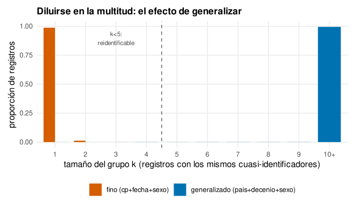
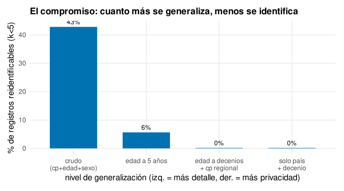
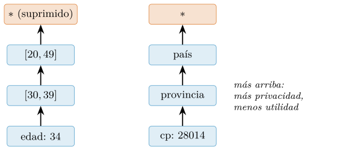
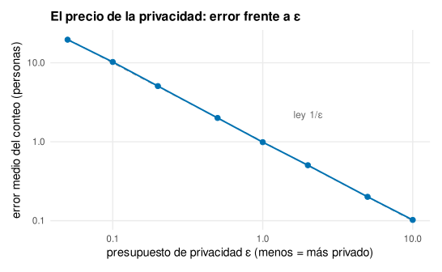
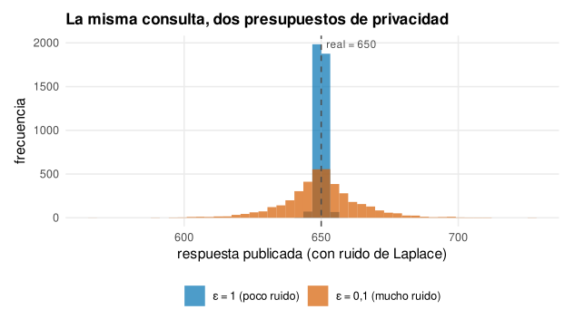
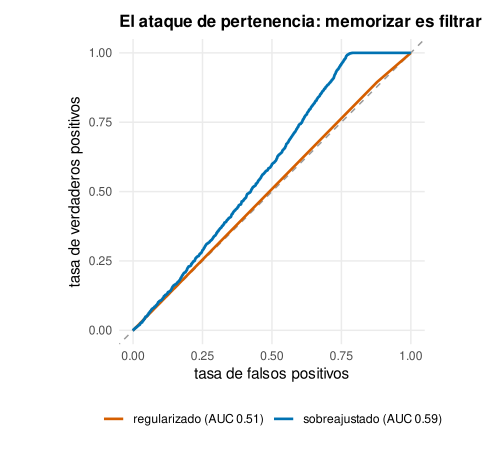
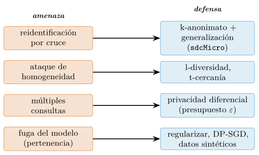

Capítulo 15. Privacidad y confidencialidad
▶ Ejecutar este capítulo en Binder
La primera vez que se abre, Binder construye el entorno en la nube (unos 10-20 min); verás una pantalla de progreso. Después queda en caché y abre en segundos. Si parece que no responde, espera a que termine de construirse o vuelve a intentarlo.
Los capítulos de modelado enseñaron a extraer de los datos un poder considerable: predecir, clasificar, decidir. Este capítulo se ocupa de la otra cara de ese poder, la que rara vez sale en los cursos técnicos y sin la cual el resto es imprudente: que casi todos los datos interesantes son datos de personas, y que trabajar con ellos conlleva un deber. Los perfiles de escucha de un servicio de música, los pacientes de un hospital, los votantes de una encuesta, los clientes de un banco: detrás de cada fila hay alguien que no dio sus datos para cualquier uso, y que tiene derecho a que no lo expongan. La privacidad —el derecho de una persona a controlar qué se sabe de ella— y la confidencialidad —el deber de quien custodia esos datos de no divulgarlos— son, en la ciencia de datos, tanto una obligación legal como una cuestión de oficio y de ética.
Conviene entender por qué esto importa cada vez más, y no menos. Hace tres décadas, los datos de una persona cabían en unos pocos registros dispersos y difíciles de cruzar; hoy, cada uno de nosotros deja un rastro digital continuo —cada búsqueda, cada compra, cada trayecto, cada canción— que, agregado, dibuja un retrato más completo y más íntimo del que nadie tendría de sí mismo. Y las técnicas de este libro son precisamente las que convierten ese rastro disperso en conocimiento: correlacionar, inferir, predecir, reidentificar. El científico de datos está, por tanto, en una posición peculiar: es quien mejor entiende lo que se puede extraer de los datos de una persona, y por eso es también quien más responsabilidad tiene de no hacerlo cuando no debe. La potencia técnica que los capítulos anteriores otorgan no es neutra; apuntada a datos de personas, es un poder que exige contención, y este capítulo enseña las formas concretas de ejercerla.
La buena noticia para quien llega desde R es que la privacidad es sobre todo metodología, no sintaxis: los conceptos —anonimizar, medir el riesgo de reidentificación, añadir ruido con garantía, detectar la fuga de un modelo— son los mismos en cualquier lenguaje, y R, hecho por y para estadísticos, tiene un ecosistema maduro para ejercerlos. El control de divulgación estadística —la disciplina que las oficinas de estadística llevan décadas desarrollando para publicar datos sin delatar a nadie— vive en R con el paquete sdcMicro; la generación de datos sintéticos, con synthpop; la privacidad diferencial, con diffpriv. Sobre esas herramientas, y sobre un conjunto de perfiles de escucha sintéticos que iremos anonimizando y atacando, recorreremos el capítulo.
Antes de empezar, un encuadre que ordena el capítulo entero: la privacidad no es una técnica, sino un conjunto de defensas frente a un adversario, y como toda defensa, se entiende mejor pensando en el ataque. A lo largo del capítulo adoptaremos, una y otra vez, el papel del atacante —quien reidentifica, quien reconstruye un secreto por diferencias, quien extrae datos de un modelo— porque solo desde ahí se ve dónde falla cada protección. Esta perspectiva ofensiva no es morbo: es la única forma honesta de evaluar una defensa, la misma que usa la criptografía cuando somete un cifrado a los mejores ataques conocidos antes de confiar en él. Un método de anonimización que no se ha intentado romper no es seguro, es no probado, y la diferencia importa. Por eso el capítulo alterna sin cesar entre construir defensas y atacarlas, y por eso su lección más duradera no es una lista de técnicas, sino un hábito mental: ante cualquier dato que se vaya a publicar, preguntarse primero cómo lo atacaría uno mismo.
El plan va de lo más antiguo a lo más nuevo. Empezaremos por el marco jurídico que obliga —el RGPD, el reglamento europeo, y el AI Act—, para saber qué se protege y por qué. Seguiremos por la anonimización clásica —el k-anonimato— y por sus límites, que la historia ha demostrado con reidentificaciones célebres. Subiremos a la privacidad diferencial, la única garantía con demostración matemática, y veremos su precio. Descubriremos que los propios modelos del cap. 13 filtran datos personales, y cómo atacarlos y defenderlos. Cerraremos con los datos sintéticos —su promesa y su trampa— y con un flujo completo de publicación responsable. Todo, con cifras reales regeneradas en R sobre datos que, siendo sintéticos, se comportan como los de verdad.
Del dato a la persona: el marco jurídico
Antes de una sola técnica, conviene saber qué dice la ley, porque en materia de datos personales la ley no es un trámite posterior sino el marco que define qué se puede hacer. En Europa —y, por su alcance extraterritorial, en buena parte del mundo— ese marco es el Reglamento General de Protección de Datos (RGPD; (European Parliament and Council of the European Union 2016)), en vigor desde 2018, complementado desde 2024 por el Reglamento de Inteligencia Artificial (AI Act; (European Parliament and Council of the European Union 2024)). No somos juristas y este no es un tratado de derecho, pero un científico de datos que ignore estas normas es un peligro para su organización y para las personas cuyos datos maneja.
Qué es un dato personal
El RGPD acota el dato personal con una amplitud buscada: cuanto se refiera a un ser humano al que se pueda poner nombre, ahora o cruzando fuentes. La bisagra de toda la definición es esa posibilidad de llegar a la persona. No hace falta que el dato traiga un nombre o un DNI; basta con que la persona pueda ser señalada, directa o indirectamente, combinando ese dato con otros. Un código postal no identifica a nadie por sí solo, pero un código postal junto a una fecha de nacimiento y un sexo sí, casi siempre —lo veremos con cifras—. Por eso la categoría de dato personal es mucho más ancha de lo que la intuición sugiere: un identificador de dispositivo, una dirección IP, un patrón de escucha musical, la combinación de rasgos que parece anónima pero individúa. Si a partir de un registro se puede, con esfuerzo razonable, llegar a una persona, ese registro es un dato personal y está protegido.
El Reglamento distingue además una clase especialmente sensible —las categorías especiales de datos— que reciben protección reforzada: cuanto atañe a la salud, la sexualidad, la fe, la ideología o la militancia sindical, más el origen racial y los rasgos genéticos y biométricos. Su tratamiento está vedado salvo por excepciones tasadas, porque filtrarlos causa daños graves y a menudo irreparables. Y aquí acecha una trampa moderna que el científico de datos debe conocer: datos en apariencia inocuos pueden revelar categorías especiales por inferencia. El historial de escucha musical predice con inquietante precisión la edad, el estado de ánimo e incluso la orientación o las creencias; los patrones de compra delatan un embarazo antes que la familia; la localización revela visitas a un centro médico o a un lugar de culto. Un modelo que infiere lo sensible a partir de lo anodino convierte datos ordinarios en datos protegidos, y esa capacidad —la del cap. 13— es justo la que obliga a la cautela de este.
Esta inferencia de lo sensible plantea un problema jurídico y ético que la ley aún digiere. Si un modelo deduce la orientación sexual de una persona a partir de su historial de escucha —sin que ella la haya declarado nunca—, ¿ha creado un dato de categoría especial? El sentido del Reglamento dice que sí: el resultado es un dato sobre su orientación, protegido, aunque se haya inferido en vez de recogido. Pero esto tiene una consecuencia inquietante: significa que casi cualquier tratamiento de datos de comportamiento puede, potencialmente, generar categorías especiales por inferencia, y por tanto quedar sujeto a su régimen reforzado. El científico de datos que entrena un recomendador aparentemente inocuo puede estar, sin pretenderlo, fabricando inferencias sensibles, y la línea entre «predigo qué canción te gustará» y «deduzco tu estado de ánimo, tu ideología o tu salud» es más borrosa de lo que parece. La cautela que se deriva es doble: no inferir lo que no se necesita —la minimización aplicada a las conclusiones, no solo a los datos— y tratar las inferencias sensibles con la misma protección que los datos sensibles de origen. Que un dato lo haya calculado una máquina no lo hace menos personal.
Los principios del RGPD
El Reglamento se articula en unos principios que conviene interiorizar porque orientan cada decisión de diseño. La licitud exige una base legal para tratar datos —el consentimiento, un contrato, una obligación legal, un interés legítimo—: sin ella, el tratamiento es ilegal por mucho que sea útil. Este principio, aparentemente burocrático, encierra una consecuencia que sorprende a muchos analistas: que un dato sea accesible no significa que sea utilizable. Datos raspados de un perfil público, comprados a un tercero o heredados de otro proyecto pueden estar técnicamente a mano y aun así carecer de base legal para el uso que uno pretende darles. La pregunta «¿puedo usar estos datos?» no se responde mirando si se tienen, sino si hay una base que ampare ese uso concreto, y responderla mal —dar por hecho que lo accesible es usable— es una de las infracciones más comunes y más caras de las organizaciones sin cultura de privacidad. La limitación de la finalidad obliga a fijar para qué se recogen y a no reutilizarlos para otra cosa incompatible: los datos que un usuario dio para recibir recomendaciones no pueden, sin más, alimentar un modelo de riesgo crediticio. La minimización manda recoger solo lo necesario, no todo lo posible —el instinto acaparador del analista choca aquí de frente con la ley, y casi siempre pierde el analista—. La exactitud obliga a mantener los datos correctos y actualizados. La limitación del plazo prohíbe conservarlos indefinidamente. Y la integridad y confidencialidad exige protegerlos con medidas técnicas adecuadas —cifrado, control de acceso, seudonimización—. A ellos se suman derechos de la persona: acceso, rectificación, supresión (el «derecho al olvido»), portabilidad y oposición. Cada uno tiene consecuencias técnicas concretas —el derecho al olvido, por ejemplo, obliga a poder borrar a una persona no solo de la base sino, idealmente, de los modelos entrenados con ella, un problema difícil que apenas empieza a resolverse—.
Anónimo no es lo mismo que seudónimo
Una distinción del Reglamento es a la vez sutil y decisiva, y confundirla es la fuente de innumerables filtraciones. Un dato está seudonimizado cuando se ha sustituido el identificador directo (el nombre) por un seudónimo (un código, un hash), de modo que ya no se puede atribuir a una persona sin información adicional —una tabla de correspondencia guardada aparte—. Un dato está anonimizado cuando la identificación es imposible para cualquiera, de forma irreversible. La diferencia jurídica es enorme: los datos seudonimizados siguen siendo datos personales —porque la reidentificación es posible— y están plenamente sujetos al RGPD; los datos verdaderamente anónimos quedan fuera de su ámbito, porque ya no hay persona que proteger. El error clásico —y la causa de tantas sanciones— es creer anonimizado lo que solo está seudonimizado: borrar el nombre y publicar el resto, convencido de haber cumplido, cuando los atributos que quedan siguen siendo una huella que reidentifica. El resto del capítulo es, en buena medida, la demostración de que anonimizar de verdad es mucho más difícil de lo que parece, y de por qué borrar el nombre casi nunca basta.
La seudonimización, aunque no anonimiza, no es inútil —conviene no menospreciarla por lo dicho—. Es una medida de seguridad valiosa y a menudo obligatoria: separar los identificadores directos de los datos de análisis, guardando la tabla de correspondencia bajo llave y acceso restringido, reduce el daño de una brecha —quien roba la tabla de análisis no roba los nombres— y limita quién puede reidentificar dentro de la propia organización. Lo que no hace es convertir el dato en anónimo a efectos legales, ni protegerlo frente a la reidentificación por cruce, porque los cuasi-identificadores siguen ahí. La forma correcta de entenderla es como una capa de la defensa en profundidad —útil, exigible, pero insuficiente por sí sola—, no como la meta. El error no es seudonimizar; es creer que seudonimizar es anonimizar y actuar en consecuencia, publicando como anónimo lo que sigue siendo personal. La distinción, sutil sobre el papel, tiene consecuencias legales enormes —un régimen jurídico entero de diferencia— y prácticas mayores aún, porque marca la frontera entre lo que se puede difundir libremente y lo que no.
Los sistemas de alto riesgo y la obligación de explicar
El AI Act merece un poco más de detalle en su núcleo —los sistemas de alto riesgo— porque es donde más toca al científico de datos. Un sistema cae en esa categoría por su uso, no por su técnica: decidir sobre el acceso a un crédito, seleccionar candidatos a un empleo, evaluar a un estudiante, asistir en decisiones judiciales o médicas, gestionar infraestructuras críticas. Para ellos, el Reglamento impone obligaciones que traducen a requisitos técnicos concretos: datos de entrenamiento de calidad y representativos —para no perpetuar sesgos—, documentación técnica exhaustiva, registro de la actividad del sistema, transparencia hacia los afectados, supervisión humana efectiva —no un humano que se limita a validar lo que la máquina decidió— y robustez frente a errores y ataques. Muchas de estas exigencias son las buenas prácticas de los capítulos anteriores —validar sin fuga, medir con honradez, interpretar el modelo— ahora con fuerza de ley. La interpretabilidad del cap. 14, en particular, deja de ser opcional: un sistema de alto riesgo que decide sobre una persona debe poder explicar, a esa persona, por qué decidió lo que decidió, y las técnicas de SHAP y dependencia parcial pasan de refinamiento técnico a requisito de cumplimiento. Para el profesional, el mensaje es claro: según sobre quién y sobre qué decida su modelo, las prácticas que este libro recomienda por rigor pueden ser, además, obligatorias por ley.
El AI Act: normar la máquina además del dato
El RGPD regula el dato; el AI Act, más reciente, regula la máquina que lo procesa. Su enfoque es el riesgo: clasifica los sistemas de inteligencia artificial por el daño que pueden causar y les impone obligaciones proporcionadas. Prohíbe unos pocos usos considerados inaceptables —la puntuación social masiva al estilo de algunos estados, el reconocimiento biométrico en tiempo real con excepciones muy tasadas, la manipulación que explota vulnerabilidades—. Somete a los sistemas de alto riesgo —los que deciden sobre crédito, empleo, educación, justicia o servicios esenciales— a requisitos estrictos de calidad de datos, transparencia, supervisión humana, robustez y documentación. Y exige a los sistemas de propósito general —los grandes modelos— transparencia sobre sus capacidades y sus datos de entrenamiento. Para el científico de datos, la lección es que el modelo del cap. 14 no es un artefacto técnico neutro: según lo que decida y sobre quién, puede caer bajo obligaciones legales concretas, y la interpretabilidad del cap. 14 —abrir la caja negra— deja de ser una buena práctica para convertirse, a menudo, en un requisito.
Responsabilidades, roles y evaluación de impacto
El Reglamento no solo protege a la persona; reparte responsabilidades concretas entre quienes tratan sus datos, y conviene conocerlas porque el científico de datos opera dentro de ese reparto. La figura central es el responsable del tratamiento (controller): quien decide para qué y cómo se tratan los datos, y sobre quien recae la responsabilidad última. A su servicio está el encargado del tratamiento (processor): quien los trata por cuenta del responsable —el proveedor de nube, la consultora de análisis—, sujeto a un contrato que fija los límites. Una organización que analiza datos propios es responsable; una que los analiza para otra es encargada, y confundir el papel diluye la responsabilidad, que es justo lo que la ley quiere evitar. El principio que corona el edificio es la responsabilidad proactiva (accountability): no basta con cumplir, hay que poder demostrar que se cumple, con registros, políticas y documentación. Es la misma exigencia de trazabilidad que la reproducibilidad impone (cap. 16), ahora con fuerza legal.
Dos instrumentos merecen nombre propio. La evaluación de impacto relativa a la protección de datos (DPIA) es obligatoria antes de un tratamiento de alto riesgo —un sistema que perfila a gran escala, que trata categorías especiales, que vigila un espacio público—: un análisis previo y documentado de los riesgos para las personas y de las medidas para mitigarlos, que el equipo de datos ayuda a elaborar. Y la protección de datos desde el diseño y por defecto (privacy by design and by default) obliga a incorporar la privacidad en la arquitectura del sistema desde el primer boceto —no como un parche final— y a que la configuración más protectora sea la de fábrica. Estos dos principios convierten la privacidad de un trámite a posteriori en una decisión de ingeniería que empieza antes de la primera línea de código, y son la razón de que un capítulo de privacidad no vaya al final del proyecto sino que impregne todo su ciclo.
El derecho al olvido y sus consecuencias técnicas
Entre los derechos de la persona, uno tiene consecuencias técnicas especialmente espinosas: el derecho de supresión, popularmente «derecho al olvido». Una persona puede exigir que se borren sus datos, y cumplirlo parece trivial —un DELETE en la base— hasta que se recuerda todo lo que se derivó de ellos. Sus datos alimentaron agregados, informes, copias de seguridad y —lo más difícil— modelos entrenados. Borrar a una persona de la base no la borra del modelo que aprendió de ella y que puede, como vimos (§15.5), filtrarla. El desaprendizaje automático (machine unlearning) —hacer que un modelo olvide un ejemplo concreto sin reentrenarlo entero, que sería carísimo— es un campo de investigación joven y difícil, y su inmadurez es un problema real: hoy, cumplir el derecho al olvido sobre un modelo desplegado a menudo obliga a reentrenarlo desde cero sin esa persona. La lección para el diseño es preventiva: cuanto más se sepa de antemano qué datos podrán retirarse, más fácil será estructurar los pipelines y los modelos para permitirlo, otro argumento para la privacidad desde el diseño.
Un último aspecto del marco tiene consecuencias prácticas inmediatas: las transferencias internacionales. El RGPD restringe el envío de datos personales fuera del Espacio Económico Europeo a países que no ofrezcan una protección equivalente, y esa restricción —llevada a los tribunales en litigios célebres— afecta directamente a decisiones técnicas cotidianas: qué proveedor de nube usar, dónde se alojan los servidores, si un servicio de análisis extranjero puede procesar los datos. Para el científico de datos, significa que la elección de infraestructura del cap. 16 no es solo técnica ni económica, sino también jurídica: alojar unos datos europeos en un servidor del otro lado del mundo puede ser una infracción, por muy barato y cómodo que resulte. La geografía de los datos importa, y conviene saberlo antes de subir el primer fichero a un servicio cuya ubicación se desconoce.
Más allá de la ley: la ética del dato
Cumplir la ley es el suelo, no el techo. Hay usos de datos que son perfectamente legales y aun así cuestionables, y el científico de datos, que a menudo es la primera persona que ve lo que se puede hacer con un conjunto, tiene una responsabilidad ética que la ley no agota. La ley va siempre por detrás de la técnica: cuando el RGPD se redactó no existían los modelos de lenguaje que hoy memorizan datos personales, y cuando el AI Act entre en pleno vigor la técnica habrá avanzado de nuevo. En ese desfase perpetuo, el criterio ético es lo único que llena el hueco. Preguntas que la ley no responde pero el oficio sí debe plantearse: ¿consentiría la persona este uso si lo entendiera de verdad?; ¿el beneficio justifica el riesgo que traslado a gente que no lo eligió?; ¿estoy infiriendo algo sensible que nadie me autorizó a saber?; ¿este modelo, aun legal, perpetúa una injusticia? La privacidad como valor —no como casilla de cumplimiento— es parte del profesionalismo de quien trabaja con datos, y su ausencia es lo que convierte la potencia técnica de este libro en un riesgo. El capítulo final del volumen retoma esta ética y la extiende a la equidad y la rendición de cuentas; aquí basta con sembrar la idea de que el «se puede» legal no agota el «se debe» ético, y que la distancia entre ambos la cubre el juicio de quien maneja los datos.
Un caso concreto de esa distancia merece nombre: el consentimiento. La ley admite el consentimiento como base para tratar datos, y sobre el papel parece la garantía perfecta —si la persona dijo que sí, ¿qué problema hay?—. La práctica lo ha degradado. El consentimiento que se obtiene con un muro de texto legal que nadie lee, una casilla premarcada o un botón «aceptar todo» mucho más visible que el de rechazar —los llamados patrones oscuros— es un consentimiento vacío: técnicamente válido, éticamente falso. Un usuario que acepta unos términos de 40 páginas para escuchar una canción no ha consentido de verdad al uso de sus datos de escucha para entrenar modelos, aunque haya pulsado el botón. El propio Reglamento lo reconoce al exigir que el consentimiento sea informado, específico, libre e inequívoco, cuatro adjetivos que el consentimiento de casilla vulnera de cuatro maneras: no informa (nadie lee el muro de texto), no es específico (cubre usos futuros indeterminados), no es libre (rechazar suele impedir usar el servicio) y a veces ni siquiera es inequívoco (casillas premarcadas). Que la práctica se salga con la suya no lo hace correcto, y las autoridades han empezado a sancionar los patrones oscuros más flagrantes. El científico de datos que diseña o alimenta esos sistemas participa en esa ficción, y tiene la responsabilidad de no escudarse en un consentimiento que sabe hueco. El consentimiento genuino —informado, específico, libre, revocable— es difícil y caro de obtener, y por eso la tentación de sustituirlo por su simulacro es grande; resistirla es parte del oficio honesto.
Privacidad, equidad y discriminación
Hay un cruce entre la privacidad y otra dimensión ética —la equidad— que conviene señalar porque son problemas gemelos y a veces en tensión. Un modelo puede discriminar a un grupo protegido —por sexo, por origen, por edad— aunque no use esas variables directamente, porque los cuasi-identificadores que sí usa las predicen: el código postal correlaciona con la etnia, el patrón de compra con el sexo. Es el mismo fenómeno que hace peligrosos a los cuasi-identificadores para la privacidad —que codifican información sensible sin nombrarla— aplicado ahora a la discriminación. Y aquí surge una tensión incómoda: para comprobar que un modelo no discrimina hace falta conocer el atributo protegido de cada persona (para medir si acierta igual en cada grupo), pero recoger ese atributo es justo lo que la minimización y la protección de categorías especiales desaconsejan. Privacidad y equidad, ambas deseables, tiran a veces en direcciones opuestas, y resolver esa tensión —con técnicas que miden la equidad sin exponer el atributo, o con marcos legales que autorizan su uso solo para auditar— es un frente activo. El capítulo final del libro desarrolla la equidad; baste aquí retener que la privacidad no es la única responsabilidad del que modela, y que las distintas responsabilidades no siempre son compatibles sin más, sino que exigen un equilibrio pensado.
Defender el modelo: más allá de detectar la fuga
Detectar que un modelo filtra es el primer paso; defenderlo es el segundo, y las defensas forman una escalera de coste creciente. La más barata y la primera es regularizar —la disciplina del cap. 13—: un modelo que no sobreajusta memoriza menos y filtra menos, de modo que buena parte de la protección de privacidad viene gratis con las buenas prácticas de modelado. La segunda es limitar lo que el modelo expone: devolver solo la clase predicha en vez de las probabilidades completas, o redondear las confianzas, priva al atacante de la señal fina que explota —aunque también reduce la utilidad de la API—. La tercera, cuando se necesita una garantía formal, es entrenar con privacidad diferencial (DP-SGD), que acota matemáticamente la fuga a cambio de exactitud. Y la cuarta, para escenarios de colaboración, es el aprendizaje federado con privacidad diferencial (§15.6), que evita reunir los datos y protege lo que se comparte. Elegir en esta escalera es el mismo compromiso de siempre: más protección, más coste en utilidad o en cómputo, y la decisión depende de cuán sensibles sean los datos y cuán expuesto esté el modelo. Un modelo interno que nadie consulta necesita menos defensa que una API pública entrenada con historiales médicos.
Conviene, además, una advertencia sobre la evaluación de estas defensas, porque es fácil engañarse. Que un ataque concreto —el nuestro, sencillo— no consiga extraer nada de un modelo no demuestra que el modelo sea seguro; demuestra que ese ataque falló. Un atacante mejor —con modelos sombra, con más consultas, con conocimiento del dominio— podría triunfar donde el nuestro fracasó. La seguridad de un modelo, como la de un cifrado, no se prueba por la ausencia de un ataque exitoso, sino por la resistencia frente a los mejores ataques conocidos, y esa evaluación es un trabajo continuo, no un sello permanente. La humildad que se deriva es la misma de toda la seguridad: nunca se puede afirmar «esto es seguro» sin más, solo «esto ha resistido los ataques que hemos sabido lanzarle», y la diferencia entre ambas frases es la que separa la confianza informada de la falsa tranquilidad. Un modelo que se despliega con datos sensibles debe someterse a un análisis de privacidad tan serio como su análisis de exactitud, y por las mismas manos escépticas.
Anonimización y sus límites: el k-anonimato
Con el marco legal claro, pasamos a la técnica. El problema central es este: queremos publicar o compartir datos —para investigación, para análisis, para transparencia— sin exponer a las personas que contienen. La primera respuesta histórica, y todavía la más usada, es la anonimización: transformar los datos para que ya no identifiquen. Trabajaremos sobre un conjunto de perfiles de escucha sintéticos —50 000 usuarios de un servicio de música, con su edad, sexo, país, código postal, gustos, intensidad de escucha y si son de pago— que, siendo inventados, reproducen la estructura estadística de datos reales y, por tanto, sus mismos peligros. Es un dato de Clase 2 en la política del cap. 10: sintético con señal, sembrado con semilla fija (42) y regenerado en R.
Lo primero es clasificar las columnas por su papel en la identificación, porque no todas pesan igual. Los identificadores directos —nombre, DNI, número de cliente— señalan a la persona por sí solos y se eliminan de entrada; es lo obvio. Los cuasi-identificadores (quasi-identifiers) —edad, sexo, código postal, fecha de nacimiento— no identifican por separado, pero en conjunto sí, y son el verdadero problema. Y los atributos sensibles —aquí, ser usuario de pago; en un hospital, el diagnóstico— son el secreto que se quiere proteger. La anonimización ingenua —borrar solo los identificadores directos— fracasa porque deja intactos los cuasi-identificadores, y son estos los que, en conjunto, delatan.
Merece detenerse en por qué los cuasi-identificadores son tan traicioneros, porque su peligro es contraintuitivo. Cada uno, por separado, parece inofensivo —millones de personas comparten un código postal, media población comparte un sexo— y esa aparente inocuidad es justo la trampa: invita a conservarlos sin recelo. Pero la identificación no crece sumando la información de cada campo, sino multiplicando sus posibilidades. Veinte países, cien edades y dos sexos parecen poca cosa cada uno, pero combinados dan cuatro mil casillas, y si a eso se añade el código postal fino y la fecha exacta, las casillas se cuentan por millones —más que personas hay—, de modo que casi cada individuo cae en una casilla propia. Es el mismo fenómeno que hace única una contraseña de pocos caracteres o una huella dactilar de pocos rasgos: la unicidad emerge de la combinación, no de las partes. Por eso la intuición —«este campo no identifica a nadie»— es un guía tan malo, y por eso hay que razonar sobre los cuasi-identificadores en conjunto, con la entropía que mediremos más adelante, en vez de descartarlos uno a uno por parecer anodinos.
El k-anonimato: confundirse entre iguales
Si lo peligroso es destacar por singular, la salida obvia es dejar de serlo. En eso consiste el k-anonimato (k-anonymity), que Latanya Sweeney formuló hace dos décadas (Sweeney 2002). Una tabla lo cumple cuando toda ficha se confunde con al menos \(k-1\) más en cuanto a sus cuasi-identificadores; equivalentemente, cuando ninguna combinación de cuasi-identificadores presente en la tabla corresponde a menos de \(k\) personas. Fijado \(k=5\), ningún registro habita un grupo de menos de cinco: por más que quien ataca sepa el código postal, la edad y el sexo de la persona buscada, tropezará con cinco o más fichas idénticas en esos campos y no podrá decidir cuál es la suya. Lo individual queda absorbido por lo colectivo.
Se llega al k-anonimato por dos caminos que suelen recorrerse juntos. El primero es generalizar: cambiar un valor fino por uno más basto —la edad exacta por la década, el código postal por el país, la fecha de nacimiento por el año—, con lo que fichas antes separadas se funden en un mismo grupo. El segundo es suprimir: retirar los escasos registros o celdas que, incluso generalizados, siguen siendo tan infrecuentes que descubrirían a su titular. Lo vemos sobre los perfiles, calculando qué porción de registros queda en grupos con \(k<5\) antes y después de generalizar:
library(dplyr)
tam_grupo <- function(df, cuasi) # k = tamano del grupo
df |> group_by(across(all_of(cuasi))) |> mutate(k = n()) |> pull(k)
# ANTES: cuasi-identificador FINO (cp + fecha_nac + sexo)
k <- tam_grupo(perfiles, c("cp", "fecha_nac", "sexo"))
mean(k < 5) * 100 #> 100.0 (todos en grupos de menos de 5)
# GENERALIZAR: edad a decenios; cp y fecha_nac -> pais
g <- perfiles |> mutate(edad10 = (edad %/% 10) * 10)
k2 <- tam_grupo(g, c("pais", "edad10", "sexo"))
mean(k2 < 5) * 100 #> 0.2 (casi todos protegidos)La diferencia es abismal (figura 15.1). Sin generalizar, casi cada usuario forma un grupo de uno: el 98,8 % es del todo único (\(k=1\)) y nadie está protegido, el riesgo máximo. Una generalización suave —la edad a la década, y el código postal y la fecha reducidos al país— hunde ese porcentaje hasta el 0,2 %. El conjunto ya generalizado es, salvo unos pocos casos residuales que habría que suprimir, esencialmente 5-anónimo.

Con sdcMicro: medir el riesgo
Calcular tallas de grupo a mano sirve para entender, pero la anonimización profesional se apoya en herramientas que miden el riesgo con rigor. En R, el estándar del control de divulgación estadística es sdcMicro (Templ et al. 2015), el paquete que usan oficinas de estadística de medio mundo para preparar microdatos antes de publicarlos. Se declara qué columnas son cuasi-identificadores y el paquete calcula, para cada registro, el tamaño de su grupo y su riesgo de reidentificación:
library(sdcMicro)
set.seed(42) # muestra de 5.000 generalizados
perfiles_gen <- perfiles |> slice_sample(n = 5000) |>
mutate(edad10 = (edad %/% 10) * 10)
sdc <- createSdcObj(perfiles_gen, keyVars = c("pais", "edad10", "sexo"))
fk <- sdc@risk$individual[, "fk"] # tamano del grupo de cada registro
sum(fk < 3) #> 79 (registros en grupos de menos de 3: alto riesgo)
sum(fk < 5) #> 232 (en grupos de menos de 5)Sobre una muestra de 5 000 perfiles ya generalizados, sdcMicro señala 79 registros en grupos de menos de tres personas y 232 en grupos de menos de cinco: los candidatos a supresión. La virtud de la herramienta no es solo contar, sino ofrecer un cuadro de mando del riesgo —riesgo individual, riesgo global, pérdida de información— que convierte la anonimización de un tanteo artesanal en un procedimiento medido y documentado, con las mismas garantías de reproducibilidad que el resto del libro.
La generalización y la supresión son las técnicas más intuitivas, pero el control de divulgación estadística tiene un arsenal más amplio que sdcMicro pone a mano, y conviene conocerlo porque cada método encaja mejor en un tipo de dato. La microagregación (microaggregation) agrupa registros parecidos en lotes de al menos \(k\) y sustituye sus valores por la media del lote: es la forma natural de dar k-anonimato a variables numéricas —la renta, el consumo—, que no se pueden generalizar en decenios como la edad. El intercambio de datos (data swapping) permuta los valores de un atributo entre registros parecidos, rompiendo el vínculo exacto entre la persona y su dato mientras conserva las distribuciones conjuntas. La adición de ruido perturba los valores numéricos, como en la privacidad diferencial pero sin su garantía formal. Y la recodificación puede ser global —la misma generalización para toda la tabla, más simple y consistente— o local —generalizar solo los registros de riesgo, preservando más detalle en los seguros, a costa de una tabla menos uniforme—. La elección entre ellas es parte del oficio, y depende de si el dato es categórico o numérico, de qué análisis debe sobrevivir y de cuánto riesgo se tolera; sdcMicro las implementa todas con métricas de riesgo y utilidad que guían la decisión, que es lo que separa una anonimización defendible de un recorte a ojo.
Un supuesto silencioso de todo lo anterior merece salir a la luz: hemos anonimizado una tabla estática, publicada una vez. Los datos reales rara vez son así. Un servicio de música genera perfiles que cambian —el usuario envejece, cambia de gustos, se da de baja— y a menudo se publican versiones sucesivas del mismo conjunto. Aquí acecha un peligro que el k-anonimato de una sola foto no ve: cruzar dos versiones puede reidentificar a quien cada una, por separado, protegía. Si en enero un grupo 5-anónimo tenía cinco personas y en febrero, tras una baja, tiene cuatro, la diferencia señala a quien se fue. Anonimizar datos dinámicos —o publicar múltiples versiones— exige cautelas adicionales que la literatura ha desarrollado (el \(m\)-invariance y parientes), y cuya lección es la de siempre: cada publicación adicional es información adicional que un atacante suma, igual que cada consulta gastaba presupuesto. La anonimización robusta no razona sobre una tabla, sino sobre todo lo que se ha publicado y se publicará del mismo conjunto, porque el atacante las tiene todas.
La matemática de la unicidad
Vale la pena entender, aunque sea de forma aproximada, por qué tanta gente resulta única, porque la cifra del 87 % de Sweeney parece a primera vista imposible. La intuición es la misma que la de la paradoja del cumpleaños, al revés. Con pocos cuasi-identificadores, el número de combinaciones posibles crece explosivamente —multiplicando las opciones de cada campo—, y en cuanto ese número supera con holgura al de personas, la mayoría de las combinaciones que existen las ocupa una sola persona. En una población de diez millones (\(\approx 2^{23}\)), bastan combinaciones con 23 bits de entropía para tener, en promedio, una persona por combinación; y como vimos, tres cuasi-identificadores demográficos superan de sobra esos 23 bits. No es que la gente sea rara: es que el espacio de rasgos es tan vasto que casi nadie coincide del todo con nadie. Esta matemática explica por qué la anonimización es intrínsecamente difícil —no es un problema de técnica, sino de la geometría del espacio de datos— y por qué crece con cada atributo que se añade: cada campo nuevo multiplica las casillas y adelgaza la multitud en la que uno se escondía. Cuantos más datos se tienen de alguien, más solo está en el espacio de todos los posibles, hasta quedar, casi siempre, único.
Nada de esto sale gratis. Asoma aquí el compromiso entre utilidad y privacidad que atraviesa el capítulo entero (figura 15.2): a más generalización, más resguardo, pero menos jugo tiene el dato. Una edad reducida a la década ya no permite seguir cómo cambia el gusto de un año al siguiente; un código postal disuelto en el país tapa las diferencias entre ciudades que un estudio de mercado querría ver. Llevado al límite, una tabla generalizada hasta un solo valor es totalmente anónima y totalmente estéril. Anonimizar bien es hallar el punto en que el dato pierde su capacidad de señalar sin perder su capacidad de informar, y ese punto no es fijo: cambia según para qué se publique y frente a quién se proteja.
Conviene, eso sí, matizar el dilema para no caer en un fatalismo cómodo. Que privacidad y utilidad estén en tensión no significa que toda protección cueste utilidad útil. A menudo, la información que la anonimización destruye es información que el análisis no necesitaba: si el estudio quiere el gusto musical por década de edad, generalizar la edad a décadas no le cuesta nada, aunque proteja mucho. La clave está en generalizar por el eje que no importa para el uso previsto, y conservar el detalle en el que sí importa. Por eso la anonimización no se hace en abstracto, sino para un uso: conocido el análisis que el dato debe soportar, a menudo se puede proteger generosamente sin sacrificar nada relevante, porque se recorta justo lo prescindible. El dilema privacidad-utilidad es real en el límite —no se puede tener protección total y utilidad total— pero en la práctica hay mucho margen antes de ese límite, y aprovecharlo —proteger lo que no cuesta antes de regatear lo que sí— es una de las habilidades finas del oficio. El mal anonimizador sacrifica utilidad a ciegas; el bueno sabe qué puede regalar gratis.


Cuando la anonimización se rompe
El k-anonimato que acabamos de construir descansa sobre una promesa optimista: que quien ataca solo dispone de la tabla que hemos publicado. La realidad es la contraria, y la historia lo ha demostrado con casos sonados. La reidentificación (re-identification) consiste en devolver el nombre a un registro que se creía anónimo, y su procedimiento típico es el cruce: se empareja la tabla «anonimizada» con otra fuente —un padrón electoral, un perfil de redes, una filtración anterior— que tenga en común con ella unos cuantos cuasi-identificadores. La anonimización ingenua se derrumba justamente por descuidar que los campos que conserva, tomados juntos, siguen componiendo una huella.
Las reidentificaciones célebres
El estudio pionero lo firma Latanya Sweeney (Sweeney 2000). Analizando el censo de 1990 de los Estados Unidos, cifró en el 87 % las personas cuya combinación de rasgos era única en todo el país —y, por ello, en principio reidentificable— con apenas tres atributos: el código postal completo, la fecha de nacimiento y el sexo. Por separado ninguno delata a nadie; los tres a la vez, casi siempre. Conviene la honestidad estadística: un recálculo posterior con el censo de 2000 la moderó hasta cerca del 63 % (Golle 2006). Se discute la magnitud; la existencia, no: buena parte de cualquier población queda fijada por un puñado de rasgos corrientes. Sweeney lo demostró de forma memorable reidentificando el historial médico del gobernador de Massachusetts en un conjunto «anonimizado» de altas hospitalarias, cruzándolo con el censo electoral público —que ella misma había comprado por veinte dólares— a través del código postal, la fecha de nacimiento y el sexo.
El caso que más marcó al campo es el premio Netflix. En 2006 Netflix publicó cien millones de valoraciones de películas de casi medio millón de usuarios, «anonimizadas» sustituyendo el nombre por un número, para un concurso público de recomendación. Narayanan y Shmatikov (Narayanan y Shmatikov 2008) demostraron que bastaba conocer unas pocas valoraciones de una persona —las que cualquiera deja en un sitio público como IMDb— para localizar su registro en el conjunto «anónimo» con altísima probabilidad, y con él todas sus demás valoraciones, incluidas las que revelaban orientación política o sexual. La lección fue demoledora y funda la privacidad moderna: un patrón de comportamiento suficientemente rico —qué películas ves, qué música escuchas— es tan único como una huella dactilar, y ninguna sustitución de nombres lo oculta. El concurso siguiente se canceló ante una demanda, y el episodio enseñó que «datos de comportamiento anonimizados» es, a menudo, una contradicción.
Lo revelador del método de Narayanan y Shmatikov es su robustez: no necesitaban conocer exactamente las valoraciones de su objetivo, solo unas cuantas aproximadas —«le gustó esta película, más o menos por estas fechas»—, y aun con ruido y datos parciales localizaban el registro correcto entre medio millón con altísima probabilidad. Esto derriba una defensa que parecía razonable: creer que basta perturbar un poco los datos —cambiar alguna valoración, mover alguna fecha— para frustrar el cruce. No basta, porque la unicidad de un patrón rico es tan extrema que sobrevive a bastante ruido: sigue habiendo un único registro compatible con las pistas del atacante, aunque las pistas sean borrosas. La lección técnica es dura y contraintuitiva: contra un cuasi-identificador de comportamiento, las medias tintas —perturbar, generalizar un poco— fracasan, porque la información residual sigue siendo suficiente para individuar. O se destruye la unicidad de raíz —lo que suele vaciar el dato de valor— o se protege con una garantía formal que no dependa de cuánto sepa el atacante. Es, una vez más, el argumento que conduce a la privacidad diferencial: la única defensa cuya solidez no se evapora ante un atacante más listo o mejor informado de lo previsto.
Este ataque de los atípicos, por cierto, es una constante que conviene generalizar: en casi toda defensa de privacidad, los individuos raros son los más expuestos. El k-anonimato los deja en grupos pequeños que hay que suprimir; la síntesis los copia; un modelo los memoriza con más facilidad que a los comunes. La razón es la misma en todos los casos —lo infrecuente es, por definición, más identificable— y tiene una implicación ética incómoda: las técnicas de privacidad protegen mejor a la mayoría que a las minorías, y quien queda peor protegido suele ser quien más lo necesita, el que se sale de la norma. Diseñar la protección con los atípicos en mente, y no solo con el caso medio, es una exigencia tanto técnica como de justicia, y olvidarla —medir la privacidad en promedio— deja desprotegidos precisamente a los más vulnerables.
El de Netflix no fue un caso aislado. Ese mismo año, AOL publicó veinte millones de búsquedas de 650 000 usuarios «anonimizados» con un número, para investigación; los periodistas reidentificaron a personas concretas a partir del contenido de sus propias búsquedas —quien busca su propio nombre, su enfermedad, su calle, se delata solo—, y el episodio acabó con dimisiones y una demanda colectiva. En genómica, se ha demostrado que basta una pequeña muestra de ADN de una persona para detectar su presencia en una base «anónima» de estudios genéticos, un ataque que obligó a restringir el acceso a esos datos en todo el mundo. El patrón se repite con inquietante regularidad: un dato suficientemente rico —búsquedas, valoraciones, genoma, localización— es una firma, y la anonimización que solo tacha los identificadores obvios lo deja intacto. Cada década trae su reidentificación célebre, y cada una enseña la misma lección que la anterior a un público que vuelve a olvidarla.
Estos casos comparten un fallo estructural que conviene nombrar: el modelo de publicar y olvidar (release and forget). Se anonimiza un conjunto una vez, se publica, y se da el problema por cerrado. Pero la privacidad no es una propiedad estática del dato: es una carrera contra un atacante cuyo poder crece con el tiempo. Cada año aparecen nuevas fuentes públicas con que cruzar, más capacidad de cómputo, mejores algoritmos de enlace. Un conjunto que era razonablemente anónimo cuando se publicó puede dejar de serlo cuando, años después, se filtra otra base que aporta justo el cuasi-identificador que faltaba. La reidentificación de Netflix se logró cruzando con IMDb, que existía desde antes; la genómica se volvió atacable cuando bajó el coste de secuenciar. La lección es que no existe la anonimización permanente: lo que se publica abiertamente queda expuesto a todos los ataques futuros, no solo a los presentes, y por eso la decisión de publicar en abierto —irreversible— debe tomarse con el peor atacante futuro en mente, no con el actual. Ante la duda, compartir bajo contrato y en entorno controlado —donde el acceso se puede revocar— es más prudente que publicar en abierto —donde ya no hay vuelta atrás—.
La cercanía: cuando la variedad no basta
La escalera de parches del k-anonimato tiene un peldaño más que conviene ver con un ejemplo, porque ilustra lo sutil que se vuelve el problema. Imaginemos un grupo l-diverso —sus miembros tienen valores distintos del atributo sensible, digamos la renta— pero en el que todos ganan entre 90 000 y 100 000 euros. La l-diversidad se cumple (hay variedad de valores), y sin embargo un atacante que sepa que su objetivo está en el grupo aprende algo muy revelador: que es rico. La variedad de valores no basta si todos los valores son parecidos y, además, atípicos respecto a la población general. Eso es lo que corrige la t-cercanía: exige que la distribución del atributo sensible dentro del grupo se parezca a su distribución en el conjunto entero, de modo que pertenecer al grupo no cambie apenas lo que se sabe de la persona. Es la garantía más estricta de las tres, y también la que más utilidad cuesta —forzar que cada grupo refleje la población global puede exigir generalizaciones drásticas—. La progresión k-anonimato \(\to\) l-diversidad \(\to\) t-cercanía es una lección en sí misma sobre la naturaleza del problema: cada garantía tapa un agujero y descubre otro más fino, y esa cadena sin fin —cada solución parcial que revela un ataque nuevo— es exactamente lo que la privacidad diferencial vino a cortar, ofreciendo de una vez una garantía que no depende de qué agujero se descubra después. Conviene, de todos modos, no descartar estas técnicas por imperfectas: siguen siendo el instrumento adecuado cuando lo que se publica es una tabla de microdatos —filas que un investigador necesita examinar una a una—, algo que la privacidad diferencial, pensada para responder consultas agregadas, no entrega con naturalidad. k-anonimato, l-diversidad y t-cercanía conviven, pues, con la privacidad diferencial en el arsenal, cada una en su nicho: las primeras para publicar microdatos con riesgo acotado, la segunda para responder estadísticas con garantía. La madurez no consiste en elegir un bando —«lo clásico está superado», «lo formal es lo único serio»— sino en saber qué herramienta encaja en qué situación, que es de lo que trata, al final, todo este capítulo.
Datos sintéticos profundos y su vigilancia
La sintetización con modelos por variable de synthpop es sólida y auditable, pero para datos de estructura compleja —muchas variables con dependencias intrincadas, o datos que no son tablas— han crecido los generadores profundos. Las redes generativas antagónicas (GAN) enfrentan dos redes, una que fabrica datos falsos y otra que intenta distinguirlos de los reales, hasta que los falsos son indistinguibles; los modelos de difusión, que dominan hoy la generación de imágenes, aprenden a revertir un proceso de ruido. Adaptados a tablas, capturan interacciones que un modelo por variable pierde, y producen datos sintéticos de gran fidelidad. Pero esa fidelidad tiene un reverso de privacidad que hay que vigilar con más cuidado, no menos: un generador profundo tiene la capacidad de memorizar —como cualquier modelo grande (§15.5)— y puede reproducir ejemplos reales con más facilidad de lo que su aura de «inteligencia artificial» sugiere. El caso extremo son los grandes modelos generativos de imágenes, de los que se ha demostrado que reproducen imágenes concretas de su entrenamiento. La regla no cambia con la potencia del generador, solo se vuelve más urgente: a más capacidad de imitar, más capacidad de copiar, y la única garantía sigue siendo entrenar el generador con privacidad diferencial. La sofisticación no sustituye a la garantía; la hace más necesaria.
Cuando la multitud comparte el secreto: l-diversidad
El k-anonimato tiene, además, una grieta interna que no depende de datos externos. Ampara frente a la reidentificación —averiguar quién es cada ficha— pero no ampara por sí mismo el atributo sensible. Imaginemos un grupo 5-anónimo bien formado: cinco personas del mismo país, decenio y sexo. Si las cinco son de pago, quien sepa que su vecino cae en ese grupo concluye que paga, sin falta de separarlo de los otros cuatro. El grupo lo esconde como persona, pero no esconde aquello que los cinco tienen en común. Este es el ataque de homogeneidad, y lo corrige la l-diversidad (l-diversity; (Machanavajjhala et al. 2007)), que exige, además del k-anonimato, que dentro de cada grupo el atributo sensible tome al menos \(l\) valores distintos —que no todos compartan el mismo secreto—. Sobre nuestros perfiles, medimos qué fracción de los grupos ya 5-anónimos es homogénea en el atributo de pago:
grupos <- perfiles_gen |> group_by(pais, edad10, sexo) |>
summarise(k = n(), l = n_distinct(premium), .groups = "drop")
gk5 <- filter(grupos, k >= 5) # solo grupos 5-anonimos
weighted.mean(gk5$l <= 1, gk5$k) * 100 #> 9.8 (% de registros homogeneos)El 9,8 % de los registros, aun estando en grupos de cinco o más, cae en grupos donde todos tienen el mismo valor de pago: para ellos, el k-anonimato no protege el secreto, porque no hace falta señalar al individuo para conocerlo. La l-diversidad exigiría rehacer o suprimir esos grupos, generalizando más hasta que cada uno mezcle usuarios de pago y gratuitos, o eliminando los que no lo consigan. Nótese lo instructivo del resultado: el 9,8 % son personas a las que el k-anonimato sí protege la identidad —nadie puede señalarlas entre las cinco o más de su grupo— pero a las que no protege el secreto —todas comparten la respuesta—. Es la prueba de que «no ser identificable» y «no revelar nada» son cosas distintas, y de que una tabla puede cumplir a la perfección el k-anonimato y aun así filtrar información sensible de un grupo entero. Distinguir ambas protecciones —la de la identidad y la del atributo— es uno de los saltos conceptuales que separan al que aplica una receta de k-anonimato del que entiende qué protege y qué no. Y es un ejemplo de la disciplina que recorre el capítulo: ante cada defensa, no celebrar el flanco que cubre, sino buscar el que deja abierto. Esa pregunta —«¿qué sigue sin proteger esto?»— es la que la escalera de parches del k-anonimato encarna, cada peldaño un flanco que alguien halló abierto en el anterior, y la que conviene hacerse ante cualquier medida de privacidad antes de confiar en ella. Y ni siquiera la l-diversidad basta del todo: si el atributo sensible es numérico y sus valores, aunque distintos, son todos parecidos (todos con una renta alta, aunque no idéntica), el secreto vuelve a filtrarse. Lo corrige la t-cercanía (t-closeness; (Li et al. 2007)), que reclama que, dentro de cada grupo, el atributo sensible se reparta de forma semejante a como se reparte en el conjunto entero. La escalera —k-anonimato, l-diversidad, t-cercanía— es una carrera de parches: cada uno tapa el agujero que dejó el anterior, y cada uno cuesta más utilidad. Esa carrera sin fin es, precisamente, lo que motivó buscar una garantía de otra naturaleza, que no dependa de qué sabe el atacante ni de cuántos parches se acumulen: la privacidad diferencial de la sección siguiente.
El cuasi-identificador sin nombre
Hay una amenaza más sutil que ninguna generalización de los campos «obvios» ataja, y que los perfiles de escucha ilustran a la perfección. Además de la edad, el sexo y el país, cada usuario tiene una huella de escucha: el conjunto de sus artistas favoritos. Ese conjunto no es un campo que uno piense en anonimizar —no es un identificador, es «solo» un gusto—, y sin embargo individúa mejor que cualquier código postal. Medimos cuánta información (en bits) aporta cada atributo para distinguir a una persona, mediante su entropía:
bits <- function(x) { p <- prop.table(table(x)); -sum(p * log2(p)) }
sapply(c("pais", "sexo", "edad"), \(v) bits(perfiles[[v]]))
#> pais 4.17 sexo 1.00 edad 5.95 (poca informacion por separado)
comb <- paste(perfiles$cp, perfiles$fecha_nac, perfiles$sexo)
bits(comb) #> 15.60 (de un maximo de log2(50000) = 15.61)Los números son elocuentes. El país aporta 4,17 bits, el sexo 1, la edad 6: poco cada uno. Pero la combinación de código postal, fecha de nacimiento y sexo aporta 15,60 bits —de un máximo teórico de \(\log_2(50\,000)=15{,}61\)—: es decir, casi identifica perfectamente, porque cada combinación es casi única. Y la huella de escucha va más allá: las 50 000 huellas de nuestros perfiles son todas distintas —50 000 de 50 000—. Un atacante que conozca los artistas favoritos de alguien lo localiza sin margen de error, como Narayanan localizó a los usuarios de Netflix. Lo perturbador es que este cuasi-identificador no aparece en ninguna lista de campos a proteger: nadie, al preparar la publicación, pensaría en «anonimizar los gustos musicales», porque no parecen un identificador. Y sin embargo son el más peligroso de todos. Esto obliga a ampliar radicalmente el concepto de cuasi-identificador: no es solo la demografía clásica —edad, sexo, código postal— sino cualquier conjunto de rasgos suficientemente rico y estable, y en la era digital eso incluye casi todo lo que registramos del comportamiento: las webs que visita, las apps que usa, los lugares por los que pasa, el ritmo con que teclea. La pregunta correcta al anonimizar ya no es «¿qué campos son identificadores?», sino «¿qué combinación de lo que publico podría hacer único a alguien?», y la respuesta, cada vez más, es «casi cualquier combinación que describa una conducta». La moraleja es incómoda: en la era de los datos de comportamiento, casi cualquier registro suficientemente rico es un cuasi-identificador, y la anonimización que solo protege los campos que «parecen» identificadores —nombre, DNI, código postal— deja abiertas las puertas que de verdad importan. Es la razón última de que la anonimización, por sí sola, sea una defensa cada vez más frágil, y de que haga falta algo con garantía.
La entropía, que hemos usado como medida de identificación, merece una palabra porque es la herramienta conceptual que unifica todo el problema. Un atributo con \(b\) bits de entropía divide a la población en, a efectos prácticos, \(2^b\) grupos distinguibles; cuando la suma de bits de los cuasi-identificadores de una persona alcanza \(\log_2 N\) —donde \(N\) es el tamaño de la población—, hay tantos grupos como personas, y cada una tiende a ocupar el suyo: la identificación es casi segura. Por eso la pregunta clave de la anonimización se puede formular en bits: ¿cuántos bits de identificación quedan tras generalizar, y cuántos hacen falta para individuar? Reducir esos bits —generalizando, suprimiendo, agregando— es reducir la resolución con que el dato distingue personas, hasta que muchas quedan bajo la misma sombra. Esta lectura en bits es más que una curiosidad: es la forma rigurosa de razonar sobre por qué unos campos protegen y otros delatan, y de anticipar, antes de publicar, si lo que queda basta para reidentificar. Un cuasi-identificador peligroso no es el que «parece» un identificador, sino el que aporta muchos bits, y la huella de escucha —con sus decenas de miles de valores distintos— aporta más bits que ningún campo demográfico.
Privacidad diferencial: una garantía con demostración
Todas las técnicas anteriores comparten una debilidad de fondo: su protección depende de suposiciones sobre el atacante —qué datos externos tiene, qué consultas encadena— que nunca se cumplen del todo. Cada vez que un método suponía «el atacante solo ve esta tabla», la realidad lo desmentía. La privacidad diferencial (differential privacy, DP; (Dwork 2006; Dwork y Roth 2014)) rompe con ese esquema: en vez de anonimizar los datos y confiar en que nadie los reidentifique, ofrece una garantía matemática sobre lo que un análisis puede revelar de cualquier individuo, sea cual sea el conocimiento externo del atacante. Es, hoy, el patrón oro de la privacidad, y la usan censos nacionales y grandes tecnológicas.
Merece un apunte de contexto histórico, porque la privacidad diferencial no nació de la nada. Durante décadas, las oficinas de estadística y los investigadores libraron una guerra artesanal —la que este capítulo ha recorrido— de anonimizar, ver cómo se reidentificaba, y parchear. Cada defensa caía ante un ataque nuevo, y el campo carecía de una forma de demostrar que algo era seguro; solo podía constatar, a posteriori, que no lo había sido. La privacidad diferencial, formulada por Cynthia Dwork y colaboradores a mediados de los 2000, cambió las reglas al aportar lo que faltaba: una definición matemática de qué significa proteger la privacidad, frente a la cual un mecanismo se puede probar seguro antes de desplegarlo, no lamentar inseguro después. Fue el paso de una disciplina empírica —prueba y error— a una con teoremas, comparable al que la criptografía moderna dio cuando dejó de inventar cifrados y empezar a demostrarlos. Ese es el motivo de que, pese a su coste en utilidad, se haya impuesto: no porque proteja más en cada caso concreto, sino porque es la única que ofrece una garantía en vez de una esperanza.
El cambio de mentalidad que exige es tan importante como su matemática, y cuesta interiorizarlo. Todas las defensas anteriores razonaban sobre el dato: cómo transformarlo para que no identifique. La privacidad diferencial razona sobre la pregunta: qué se puede averiguar preguntando. Es la diferencia entre poner un candado a un cofre y limitar cuántas preguntas se pueden hacer sobre su contenido. Ese giro tiene una consecuencia liberadora: no hay que anticipar todos los datos externos que un atacante podría tener —tarea imposible, como demostró Netflix— porque la garantía vale contra cualquiera. Y tiene una consecuencia exigente: obliga a pensar en términos de presupuesto, a aceptar que cada respuesta cuesta y que la utilidad perfecta y la privacidad perfecta son incompatibles, no por una limitación técnica que el ingenio superará, sino por un teorema. La privacidad diferencial no promete tenerlo todo; promete un cursor honesto entre dos cosas que no se pueden tener a la vez, y esa honestidad —renunciar a la ilusión del dato a la vez perfectamente útil y perfectamente privado— es parte de su valor.
La definición: una garantía sobre el mecanismo
El giro conceptual es sutil y profundo: la privacidad diferencial no es una propiedad de los datos, sino del mecanismo que los procesa. Un mecanismo aleatorizado —una consulta cuya respuesta lleva algo de azar— cumple la \(\varepsilon\)-privacidad diferencial si su conducta se altera muy poco al incorporar o retirar a una única persona de la base. Formalmente, para dos bases \(D\) y \(D'\) que difieren en un único individuo y cualquier resultado posible \(S\): \[\Pr[A(D)\in S] \;\le\; e^{\varepsilon}\cdot \Pr[A(D')\in S].\] La idea, en palabras: mires la respuesta que mires, era casi igual de probable con tu dato que sin él, de modo que la respuesta no delata si tú estabas o no en la base. El parámetro \(\varepsilon\) (épsilon) es el presupuesto de privacidad: cuanto más pequeño, más estricta la garantía (las dos probabilidades más parecidas) y más protección; cuanto más grande, más se permite que la respuesta dependa del individuo. La fuerza de la definición es que no supone nada sobre el atacante: la garantía vale frente a cualquier conocimiento externo, presente o futuro, y frente a cualquier número de consultas —con la salvedad de que el presupuesto se gasta, como veremos—. Es una promesa sobre el peor caso, no sobre el caso probable, y de ahí su solidez.
Elegir el valor de \(\varepsilon\) es la decisión más importante y la peor entendida de la privacidad diferencial, así que conviene una intuición. Un \(\varepsilon\) pequeño —por debajo de 1— da una garantía fuerte: la presencia de una persona apenas altera las probabilidades, y \(e^\varepsilon\) está cerca de 1. Un \(\varepsilon\) de 10 permite que una respuesta sea \(e^{10}\approx 22\,000\) veces más probable con una persona que sin ella: la «garantía» es tan laxa que apenas protege. La trampa es que \(\varepsilon\) vive en escala exponencial —cada unidad multiplica el factor por \(e\)—, de modo que la diferencia entre \(\varepsilon=1\) y \(\varepsilon=5\) no es de cinco veces, sino de \(e^4\approx 55\). No hay un valor «correcto» universal, pero sí un consenso aproximado: por debajo de 1 se considera protección fuerte, entre 1 y 10 protección moderada que hay que justificar, y por encima de 10 una garantía que muchos expertos consideran vacía. Lo esencial es que el número se elija y se publique: un análisis con privacidad diferencial cuyo \(\varepsilon\) no se declara es tan opaco como uno sin ninguna protección, porque nadie puede juzgar qué protege.
El mecanismo de Laplace
¿De qué modo se fabrica semejante mecanismo para una consulta numérica? El ingrediente que aún no tenemos es la sensibilidad. Tomemos una consulta \(f\) que arroja un número —un recuento, un total—; su sensibilidad \(\Delta f\) mide, en el peor de los casos, cuánto se movería la respuesta al añadir o quitar a una persona. Para «¿cuántos usuarios de pago hay?», nadie mueve el recuento en más de 1, luego \(\Delta f = 1\). El mecanismo de Laplace suma a la cifra real una sacudida aleatoria extraída de una distribución de Laplace de media cero y escala \(b = \Delta f / \varepsilon\) —la respuesta publicada es el valor verdadero más ese ruido—. Dicha escala aumenta con la sensibilidad —consulta más comprometida, más ruido— y disminuye con \(\varepsilon\) —más privacidad, más ruido—. Puede demostrarse —en una línea de cálculo— que este mecanismo satisface \(\varepsilon\)-DP: la garantía no es una aspiración, sale de la aritmética. En R cabe en una función:
rlaplace <- function(n, escala) { # ruido de Laplace, escala b
u <- runif(n) - 0.5
-escala * sign(u) * log(1 - 2 * abs(u))
}
mecanismo_laplace <- function(valor, sensibilidad, eps)
valor + rlaplace(1, sensibilidad / eps) # respuesta con garantia eps-DPLlevémoslo a la consulta «número de usuarios de pago por país», cuya sensibilidad es 1. Ejecutamos el mecanismo un montón de veces y calculamos el error absoluto promedio sobre una malla de presupuestos:
set.seed(42)
real <- perfiles |> group_by(pais) |> summarise(pr = sum(premium))
for (eps in c(0.1, 0.5, 1.0, 5.0)) {
err <- mean(replicate(200, mean(abs(rlaplace(nrow(real), 1 / eps)))))
cat(sprintf("epsilon=%.1f: error medio ~ %.2f\n", eps, err))
}
#> epsilon=0.1: error medio ~ 9.73 (1/eps = 10)
#> epsilon=0.5: error medio ~ 2.02 (1/eps = 2)
#> epsilon=1.0: error medio ~ 1.02 (1/eps = 1)
#> epsilon=5.0: error medio ~ 0.20 (1/eps = 0.2)Los datos ratifican la teoría. En una Laplace de escala \(b\), la media del valor absoluto del ruido vale justo \(b\), así que aquí el error previsto es \(1/\varepsilon\): con \(\varepsilon=0{,}1\) aparecen cerca de 9,7 personas de ruido; con \(\varepsilon=1\), alrededor de una; con \(\varepsilon=5\), apenas una quinta parte de persona. La figura 15.4 lo representa con ambos ejes en escala logarítmica, donde la relación \(1/\varepsilon\) se endereza en una línea recta: es, sin metáfora, el precio de la privacidad. Con \(\varepsilon=0{,}1\) el ruido puede sepultar el conteo de un país pequeño; con \(\varepsilon=5\) el ruido es despreciable, pero también lo es la protección.

Ayuda pensar el ruido no como una cantidad fija, sino como una distribución de respuestas posibles. La figura 15.5 dibuja, para una sola consulta —cuántos usuarios de pago tiene el país mayor, que en realidad son 650—, el histograma de las respuestas que el mecanismo devuelve al repetirlo con dos presupuestos distintos. Con \(\varepsilon=1\) las respuestas se apiñan en torno al valor verdadero: quien las lea acertará casi siempre. Con \(\varepsilon=0{,}1\) se dispersan en una campana ancha: la dispersión de la respuesta crece de 1,4 a 14,2 personas, y esa niebla es precisamente la que impide distinguir si una persona concreta estaba o no en la base. Menos presupuesto, más protección, más incertidumbre.
Hay una elegancia en por qué el ruido funciona que vale la pena hacer explícita, porque no es magia. La protección no viene de que la respuesta sea falsa —sigue estando centrada en el valor verdadero—, sino de que sea indistinguible. Si la presencia de una persona cambia el conteo real de 650 a 651, y la respuesta publicada lleva un ruido de desviación 14, entonces las dos respuestas —la de la base con esa persona y la de la base sin ella— producen campanas que se solapan casi por completo: cualquier valor que salga era prácticamente igual de probable en ambos mundos. El atacante, al ver la respuesta, no puede decidir en cuál de los dos mundos está, y esa indecisión es la privacidad. El ruido no oculta el agregado —que sigue siendo estimable— sino que borra la contribución de cada individuo bajo una incertidumbre mayor que su propio efecto. Verlo así aclara el compromiso: la protección exige que el ruido supere el efecto de una persona, y como el efecto de una persona es fijo (la sensibilidad), más protección significa necesariamente más ruido, y más ruido, menos precisión en el agregado. No es una limitación que la técnica vaya a superar: es la aritmética de esconder a uno entre muchos.

Un compromiso explícito y un presupuesto que se agota
La gran virtud de la privacidad diferencial es que convierte el compromiso privacidad-utilidad, que en el k-anonimato era difuso, en un único número que se puede fijar, negociar y auditar: \(\varepsilon\). No hay elección «correcta» universal —un censo nacional trabaja con presupuestos entre 1 y 10, una consulta muy sensible con valores por debajo de 1—, pero al menos la decisión es explícita y comparable, no un tanteo oculto en una generalización. Y trae una propiedad crucial: la composición. Si se responden varias consultas sobre los mismos datos, sus presupuestos se suman: dos consultas con \(\varepsilon=1\) cada una gastan un presupuesto total de 2, con la garantía correspondientemente más débil. El presupuesto es, de verdad, un presupuesto: se reparte entre los análisis y se agota. Esto obliga a una disciplina que la anonimización no tenía —planificar cuántas preguntas se harán y repartir el \(\varepsilon\) entre ellas—, y explica por qué la privacidad diferencial protege frente a los ataques por múltiples consultas que hunden a los sistemas que responden cada pregunta como si fuera la única: cada respuesta gasta privacidad, y cuando el presupuesto se acaba, se deja de responder.
En la práctica, gestionar el presupuesto es un ejercicio de planificación que cambia la forma de trabajar. Un analista acostumbrado a interrogar los datos libremente —probar una hipótesis, ver el resultado, probar otra— debe, bajo privacidad diferencial, presupuestar sus preguntas de antemano, porque cada consulta exploratoria consume una parte del \(\varepsilon\) total que ya no se recupera. Esto obliga a distinguir el análisis sobre los datos crudos —que el custodio hace en un entorno seguro, sin gastar presupuesto, porque no publica nada— del análisis cuyos resultados se publican, que sí lo gasta. Y lleva a técnicas de reparto: dedicar más presupuesto a las consultas importantes y menos a las accesorias, o gastar poco en una exploración gruesa y reservar el grueso para las cifras finales que se difundirán. Es una disciplina incómoda al principio —limita la libertad de preguntar— pero saludable, porque hace consciente algo que sin ella se ignora: que cada pregunta sobre datos personales filtra un poco, y que la suma de muchas preguntas inocentes puede revelar tanto como una indiscreta. La contabilidad del presupuesto es, en el fondo, la formalización de una prudencia que debería existir aunque no hubiera privacidad diferencial: no preguntar más de lo necesario.
La composición tiene, además, una teoría rica que conviene al menos entrever. La forma más simple —la composición básica— suma los presupuestos: \(k\) consultas con \(\varepsilon\) cada una gastan \(k\varepsilon\). Pero se demuestra que se puede hacer mejor: la composición avanzada muestra que el presupuesto total crece más despacio, aproximadamente como \(\sqrt{k}\,\varepsilon\) para \(k\) grande, porque los ruidos independientes se cancelan en parte. Y variantes modernas de la definición —la \((\varepsilon,\delta)\)-DP, que admite una probabilidad diminuta \(\delta\) de fallo, o la privacidad diferencial de Rényi— permiten contabilizar el gasto de forma aún más ajustada, lo que importa muchísimo cuando un modelo se entrena con miles de pasos, cada uno consumiendo presupuesto (DP-SGD). Esta contabilidad fina del presupuesto —el privacy accounting— es lo que hace práctica la privacidad diferencial en el aprendizaje: sin ella, el gasto de miles de iteraciones agotaría cualquier \(\varepsilon\) razonable.
El censo de los Estados Unidos de 2020 fue el despliegue más ambicioso hasta la fecha de esta tecnología: publicó sus tablas con privacidad diferencial y un presupuesto explícito, tras comprobar que sus métodos clásicos de protección eran vulnerables a la reconstrucción. La decisión desató una polémica instructiva —demógrafos que protestaban por el ruido en los datos pequeños frente a estadísticos que defendían la garantía— que puso el compromiso privacidad-utilidad en el centro del debate público. Fue la mayor confirmación de que la privacidad diferencial ha dejado de ser teoría: hoy protege datos que afectan a cientos de millones de personas, con todas las tensiones que eso conlleva.
La polémica del censo enseñó, además, algo sobre la política de la privacidad que el científico de datos no debe ignorar. El \(\varepsilon\) que se elige no es una decisión técnica neutra: reparte un bien escaso —la información fiable— de forma que afecta desigualmente a unos y a otros. En el censo, el ruido daña más a los datos de las comunidades pequeñas, cuyos conteos verdaderos son bajos y a las que unas pocas personas de ruido distorsionan más; y de esos conteos dependen el reparto de fondos, de escaños, de servicios. Elegir el \(\varepsilon\) es, por tanto, decidir cuánta privacidad se da a cambio de cuánta exactitud, y quién paga esa exactitud perdida —una decisión con perdedores y ganadores que no debería tomarse solo en un despacho técnico—. La lección trasciende el censo: siempre que la privacidad se aplica a datos que sostienen decisiones sobre personas, el parámetro que la gradúa tiene consecuencias distributivas, y tratarlo como un mero ajuste de ingeniería —sin preguntarse a quién beneficia y a quién perjudica— es abdicar de una responsabilidad que es, a la vez, técnica y cívica.
Privacidad diferencial local: proteger antes de recoger
Hasta aquí, un custodio de confianza tiene los datos crudos y añade ruido al publicar: es la privacidad diferencial central. Pero ¿y si no hay custodio de confianza —si el usuario no se fía ni de quien recoge sus datos—? La privacidad diferencial local (local DP) mueve el ruido al origen: cada individuo distorsiona su propio dato antes de mandarlo, así que el servidor jamás ve la verdad de nadie. Su forma clásica es la respuesta aleatorizada (randomized response), una técnica de encuestas anterior a la informática (Warner 1965): para una pregunta embarazosa, el encuestado tira una moneda en secreto y, según salga, responde la verdad o al azar, de modo que ninguna respuesta individual lo compromete —siempre puede alegar que le tocó responder al azar— pero la proporción global sigue siendo estimable. Con nuestros perfiles:
set.seed(42)
v <- perfiles$premium
# cada usuario: con prob 1/2 responde la verdad; si no, tira otra moneda
resp <- ifelse(runif(length(v)) < 0.5, v, as.integer(runif(length(v)) < 0.5))
# estimador insesgado que deshace el ruido conocido:
est <- 2 * mean(resp) - 0.5
c(real = mean(v), estimado = est) #> real 0.117 estimado 0.115El servidor recibe respuestas ruidosas de las que no puede deducir el valor real de ningún usuario —cada uno tiene negación plausible—, y aun así, al conocer la mecánica del ruido, recupera la proporción global casi exacta: 0,115 estimado frente a 0,117 real. Es el mismo principio de la privacidad diferencial central —ruido calibrado que protege al individuo sin destruir el agregado— llevado al extremo de no confiar en nadie. Es el modelo que usan navegadores y teléfonos para recoger estadísticas de uso sin conocer la conducta de cada usuario, y su precio es el mismo de siempre: para recuperar el agregado con la misma precisión hace falta mucha más gente, porque cada respuesta trae más ruido.
La respuesta aleatorizada de la moneda es la versión de juguete; en producción se usan protocolos más elaborados. El más conocido, RAPPOR, que un gran navegador desplegó para recoger estadísticas de configuración de millones de usuarios, aplica la idea a datos categóricos con varias capas de aleatorización y filtros de Bloom, de modo que ni siquiera el servidor que agrega puede reconstruir el valor de un usuario, y aun así estima la distribución global. La diferencia entre la privacidad diferencial local —la de RAPPOR, donde nadie ve la verdad— y la central —donde un custodio de confianza la ve y añade ruido al publicar— es un compromiso de fondo: la local ofrece más protección (no exige confiar en nadie) pero cuesta mucha más utilidad (más ruido por persona), mientras que la central da mejores estimaciones a cambio de confiar en el custodio. Elegir entre ambas es decidir en quién se confía, y esa decisión —técnica y a la vez política— es tan importante como el propio \(\varepsilon\).
Hay una belleza en la respuesta aleatorizada que conviene saborear, porque encierra el corazón de toda la privacidad estadística en un gesto de una moneda. La clave es que el ruido, aunque destruye la información de cada respuesta individual, es conocido y sesgado de forma controlada, de modo que se puede deshacer en el agregado. Cada usuario queda protegido por la negación plausible —«pude haber respondido al azar»— mientras que el analista, sabiendo exactamente con qué probabilidad se mintió, corrige el sesgo y recupera la proporción real. Es la misma idea que el mecanismo de Laplace —ruido calibrado que se cancela en promedio— pero repartida entre los propios usuarios en vez de aplicada por un custodio. Y revela la esencia de por qué la privacidad estadística es posible: existe una asimetría fundamental entre lo que se puede saber de un individuo (nada, si el ruido supera su señal) y lo que se puede saber de una población (mucho, si hay bastante gente para que el ruido se promedie). Toda la disciplina vive en esa asimetría: proteger al uno sin cegar al conjunto. Cuando alguien afirma que privacidad y utilidad son incompatibles sin más, olvida que operan en escalas distintas —la del individuo y la de la masa— y que ahí, en esa diferencia de escala, es donde cabe la protección.
DP-SGD merece salir un momento del recuadro avanzado por lo que representa: la convergencia de los dos grandes temas del capítulo. La primera mitad protegía datos; la privacidad diferencial protegía consultas; DP-SGD protege el aprendizaje mismo, tratando cada paso del entrenamiento como una consulta que gasta presupuesto. Con ello, el modelo entrenado hereda una garantía formal: se puede afirmar, con demostración, que ninguna persona del entrenamiento influyó en él más de lo que \(\varepsilon\) permite, y por tanto que el ataque de pertenencia —o cualquier otro— no puede extraer más de lo que esa cota autoriza. Es la respuesta definitiva a la fuga de modelos, superior a regularizar (que reduce la fuga sin acotarla) porque garantiza en vez de solo mitigar. Su precio, ya se dijo, es alto —más ruido, más datos, más cómputo, y una caída de exactitud que puede ser notable—, y por eso no se usa en todo modelo, sino cuando los datos son tan sensibles que la garantía compensa el coste: historiales médicos, datos financieros, cualquier cosa cuya filtración sea inaceptable. Saber que existe, y cuándo vale la pena pagarla, es parte del criterio de un científico de datos que trabaja con información que de verdad importa proteger.
Cuando el modelo delata a quien lo entrenó
Hasta ahora el objeto a proteger fueron los datos. Pero el modelado destapó una amenaza inédita: un modelo entrenado con datos personales puede filtrarlos, aunque los datos originales nunca se publiquen. Se comparte el modelo —una API, un fichero de pesos— creyéndolo un resumen inofensivo, y resulta que lleva dentro rastros de las personas con que se entrenó. Este es el frente más moderno de la privacidad, y conecta directamente con el sobreajuste del cap. 13.
La raíz: los modelos memorizan
La causa es sencilla de enunciar: un modelo con suficiente capacidad no solo aprende el patrón general, sino que memoriza ejemplos concretos del entrenamiento, y esa memoria es información personal grabada en sus parámetros. El sobreajuste —que en el cap. 13 combatimos por razones de exactitud— reaparece aquí como un problema de privacidad: a mayor memorización de un modelo, más revela sobre quienes lo entrenaron. La forma más estudiada de explotar esa memoria es el ataque de inferencia de pertenencia (membership inference; (Shokri et al. 2017)): dado un modelo y un registro, decidir si ese registro estuvo o no en su entrenamiento. Puede sonar inocuo, pero no lo es: saber que alguien estuvo en el conjunto de entrenamiento de «un modelo de predicción de recaída oncológica» revela que tiene cáncer. La pertenencia misma es, a veces, el secreto.
Conviene entender por qué la confianza del modelo delata la pertenencia, porque el mecanismo es el mismo que combatimos por otras razones. Un modelo que memoriza a los suyos les asigna, al reencontrarlos, una confianza anormalmente alta —los «reconoce»—, mientras que ante un caso nuevo, aunque similar, duda un poco más. Esa diferencia de confianza entre lo memorizado y lo nunca visto es la brecha de sobreajuste del cap. 13, mirada desde la privacidad en vez de desde la exactitud. Por eso los dos problemas —generalizar mal y filtrar datos— tienen la misma causa y la misma cura: un modelo que generaliza bien, que trata igual lo visto y lo no visto, no tiene esa diferencia de confianza que explotar, y por tanto no filtra la pertenencia. Es uno de esos casos afortunados en que hacer lo correcto por una razón —modelar bien— resuelve de paso otro problema —proteger la privacidad—, y de ahí que la primera línea de defensa de la privacidad de un modelo no sea criptografía exótica, sino la buena práctica de modelado que ya se conocía.
El ataque sobre los perfiles de escucha
Reproduzcamos el ataque, reutilizando el instrumental de modelado del cap. 14. Entrenamos dos clasificadores de pago sobre idénticas variables, a propósito opuestos: uno muy flexible y con pocos ejemplos —profundidad sin tope, muchísimos árboles, hojas de un único registro—, el caldo de cultivo perfecto de la memorización; y otro con frenos —profundidad limitada, hojas nutridas, penalización—. El ataque no requiere ingenio: por cada registro observamos qué confianza otorga el modelo a la etiqueta que de verdad le corresponde. Puesto que el modelo grabó a los suyos, esa confianza suele ser más alta para quien formó parte del entrenamiento que para el resto, de manera que ya funciona como la puntuación del atacante. Medimos la brecha train-test (cuánto sobreajusta) y el AUC del ataque (cómo de bien la confianza separa a a quien estuvo dentro de quien no), con las métricas de yardstick:
library(xgboost); library(yardstick)
feats <- c("edad", "cp", "energia_media", "minutos_dia", "sexoF")
datos <- perfiles |> mutate(sexoF = as.integer(sexo == "F"))
set.seed(42)
muestra <- function(n) datos[sample(nrow(datos), n), ] # miembros / no-miembros
tr <- muestra(2000); te <- muestra(5000) # pocos dentro, muchos fuera
Xtr <- as.matrix(tr[feats]); ytr <- tr$premium
Xte <- as.matrix(te[feats]); yte <- te$premium
acc <- function(p, y) mean((p > 0.5) == (y == 1))
ev <- function(ctr, cte) tibble( # tabla del ataque
miembro = factor(c(rep("si", length(ctr)), rep("no", length(cte))),
c("no", "si")),
conf = c(ctr, cte))
sobreajustado <- list(max_depth = 0, eta = 0.3, min_child_weight = 1,
nrounds = 600, objective = "binary:logistic")
regularizado <- list(max_depth = 3, eta = 0.1, min_child_weight = 100,
lambda = 1, nrounds = 100, objective = "binary:logistic")
ataque <- function(par) {
bst <- xgb.train(par, xgb.DMatrix(Xtr, label = ytr),
nrounds = par$nrounds, verbose = 0)
ptr <- predict(bst, Xtr); pte <- predict(bst, Xte)
brecha <- acc(ptr, ytr) - acc(pte, yte) # cuanto sobreajusta
conf_tr <- ifelse(ytr == 1, ptr, 1 - ptr) # confianza en la clase REAL
conf_te <- ifelse(yte == 1, pte, 1 - pte)
auc <- roc_auc(ev(conf_tr, conf_te), miembro, conf,
event_level = "second")$.estimate
c(brecha = round(brecha, 3), auc = round(auc, 3))
}
ataque(sobreajustado) #> brecha=+0.126 AUC ataque=0.587
ataque(regularizado) #> brecha=+0.017 AUC ataque=0.508Las cifras narran algo nítido (figura 15.6). El modelo flexible abre una distancia entre su acierto en train y en test de \(+0{,}131\) y produce un AUC de ataque de 0,589: fiarse de su confianza en la clase verdadera permite adivinar la pertenencia bastante mejor que al azar. El modelo con frenos casi no diferencia lo visto de lo no visto —distancia \(+0{,}016\)— y su AUC de ataque desciende a 0,508, casi el 0,5 de la pura suerte. La moraleja cose la primera mitad del capítulo con la del cap. 13: la memorización excesiva es el resquicio por el que escapa el dato personal, y las defensas para taparlo son ya conocidas —poner frenos, sumar más datos y, si hace falta una garantía formal y no solo empírica, entrenar con privacidad diferencial (DP-SGD), que limita de raíz cuánto absorbe el modelo de una sola persona—.

Inversión, extracción y el caso de los modelos de lenguaje
La pertenencia es solo la punta. Hay ataques que reconstruyen más que la mera presencia. La inversión de modelo (model inversion) intenta recuperar atributos de las personas del entrenamiento a partir de las predicciones del modelo —en un caso célebre, reconstruir una cara reconocible a partir de un modelo de reconocimiento facial y el nombre de la persona—. Y la extracción de datos de entrenamiento llega al extremo: en los grandes modelos de lenguaje, se ha demostrado que es posible hacerles recitar secuencias literales de su entrenamiento —números de teléfono, direcciones, trozos de código con credenciales— que memorizaron (Carlini et al. 2021, 2019). Estos modelos son el ejemplo extremo de la regla de fondo: su capacidad es tan enorme que memorizan casos raros aunque generalicen bien en promedio, de modo que filtran la pertenencia —y a veces el contenido literal— sin la brecha train-test clásica. La memorización literal de datos personales es hoy una de las mayores preocupaciones de privacidad del aprendizaje automático, y la razón de que el AI Act exija transparencia sobre los datos de entrenamiento de los modelos de propósito general.
Este fenómeno obliga a repensar una intuición cómoda. Solíamos pensar que un modelo era un resumen —una destilación de patrones que dejaba atrás los ejemplos concretos, como una media olvida los números que promedió—. Para los modelos pequeños y regularizados es casi cierto. Pero cuanto mayor es la capacidad, menos cierto se vuelve: un modelo con miles de millones de parámetros tiene sitio de sobra para guardar ejemplos raros además de aprender el patrón general, y lo hace. La consecuencia práctica es que la capacidad que hace potente a un modelo es la misma que lo hace peligroso para la privacidad, y que no se puede tener una sin vigilar la otra. Esto rompe la separación cómoda entre «los datos, que hay que proteger» y «el modelo, que es inocuo»: el modelo es datos, comprimidos y transformados, pero datos al fin. Tratarlo con el mismo cuidado que a la base de la que salió —controlar quién lo consulta, medir qué filtra, exigirle garantías si decidió sobre personas— deja de ser exageración para convertirse en la única postura coherente. Baste retener la idea: un modelo no es un resumen inocuo de sus datos, sino un artefacto que puede llevarlos dentro, y compartirlo puede ser compartir a las personas con que se entrenó.
La extracción de datos de los modelos de lenguaje merece un momento más porque redefine el problema. Cuando un modelo se entrena con una porción enorme de internet —que incluye, sin filtrar, datos personales de millones de personas que nunca consintieron—, la memorización deja de ser un accidente marginal para convertirse en una propiedad de escala: se ha demostrado que basta pedirle al modelo la continuación adecuada para que escupa una dirección, un teléfono o un fragmento de texto que aparecía una sola vez en su entrenamiento. Esto plantea preguntas que la privacidad clásica no había tenido que responder: ¿tiene derecho al olvido alguien cuyos datos un modelo memorizó?; ¿cómo se audita qué datos personales lleva dentro un modelo de miles de millones de parámetros?; ¿quién responde cuando un modelo revela un dato que su creador ni sabía que contenía? Son preguntas abiertas, en el filo de la técnica y la ley, y el AI Act empieza a abordarlas exigiendo transparencia sobre los datos de entrenamiento. Para el científico de datos, la lección práctica es de humildad: los modelos grandes son cajas cuyo contenido exacto nadie conoce del todo, y tratarlos con la cautela que merece lo desconocido —no desplegarlos donde una filtración sería grave sin haber medido qué memorizaron— es la única postura prudente ante una tecnología cuyos riesgos de privacidad aún estamos aprendiendo a cartografiar.
Tecnologías que computan sin ver los datos
Las defensas vistas hasta aquí transforman el dato —lo generalizan, le añaden ruido— para poder compartirlo. Hay una familia distinta y creciente de tecnologías de mejora de la privacidad (privacy-enhancing technologies, PETs) que persigue algo más ambicioso: computar sobre los datos sin verlos, o sin reunirlos jamás en un solo sitio. Son la frontera de la privacidad aplicada, y aunque su implementación excede este libro, un científico de datos de 2026 debe conocer su existencia y para qué sirve cada una, porque están cambiando cómo se colabora con datos sensibles.
El aprendizaje federado (federated learning) da la vuelta al esquema habitual: en vez de traer los datos al modelo, lleva el modelo a los datos. El modelo se entrena en los dispositivos o servidores donde los datos viven —los teléfonos de los usuarios, los hospitales de un consorcio—, y solo se comparten las actualizaciones del modelo, no los datos crudos, que nunca salen de su origen. Es como aprender de mil bibliotecas sin sacar un solo libro de ninguna. Resuelve el problema de reunir datos que legal o prácticamente no pueden juntarse —varios hospitales que quieren un modelo común sin compartir sus historiales—, aunque no es una panacea: las actualizaciones del modelo pueden filtrar información (vuelve el ataque de pertenencia), por lo que el aprendizaje federado se combina en la práctica con privacidad diferencial para proteger también lo que se comparte.
El cómputo multiparte seguro (secure multi-party computation) permite a varias partes calcular juntas una función de sus datos —la media de sus salarios, el resultado de un modelo— sin que ninguna revele su parte a las demás. Mediante protocolos criptográficos, cada participante aporta su dato cifrado o troceado, y el cómputo produce el resultado correcto sin que nadie vea los datos ajenos: dos empresas pueden descubrir cuántos clientes tienen en común sin enseñarse las listas. Y el cifrado homomórfico (homomorphic encryption) lleva la idea al extremo teórico: permite operar directamente sobre datos cifrados, de modo que un servidor puede calcular sobre datos que no puede leer y devolver un resultado cifrado que solo el dueño descifra. Es la promesa de delegar el cómputo en la nube sin confiar en ella; su coste computacional, hoy alto, lo reserva por ahora a casos concretos, pero avanza rápido.
Conviene, eso sí, no idealizarlas: cada una tiene su reverso. El aprendizaje federado reduce el tráfico de datos pero multiplica la complejidad de coordinar mil dispositivos y no elimina la fuga por las actualizaciones. El cómputo seguro y el cifrado homomórfico ofrecen garantías criptográficas fuertes a cambio de un coste computacional que, para muchos análisis, sigue siendo prohibitivo. Y todas comparten un límite lógico: protegen el proceso de cómputo, pero no cambian lo que el resultado revela —si el resultado de un cómputo federado es un modelo que memoriza, el modelo filtra igual, por más que los datos nunca se hayan reunido—. Por eso estas tecnologías no sustituyen a las anteriores, sino que se apilan sobre ellas: computar sin ver los datos es valioso, pero el resultado de ese cómputo aún necesita privacidad diferencial si va a publicarse. Son piezas de la defensa en profundidad, no su culminación.
Estas tecnologías comparten una filosofía que resume el ideal de la privacidad moderna: la mejor forma de no filtrar un dato es no tener que verlo nunca. Se combinan entre sí y con las anteriores —aprendizaje federado con privacidad diferencial, cómputo seguro sobre datos ya anonimizados— en arquitecturas de defensa en profundidad. No son ciencia ficción: se usan ya en producción para teclados predictivos, diagnóstico médico colaborativo y estadísticas de uso, y su adopción crecerá al ritmo de la presión regulatoria y de la conciencia de que los datos de las personas no son un recurso a acaparar, sino una responsabilidad a administrar con el menor contacto posible.
Datos sintéticos como herramienta de privacidad
Hay una vía distinta y cada vez más popular: en vez de anonimizar los datos reales, generar datos falsos que se parezcan a ellos. Los datos sintéticos se producen ajustando un modelo generativo a los datos reales y muestreando de él filas nuevas, que reproducen las distribuciones y correlaciones del original sin corresponder a ninguna persona concreta. La promesa es seductora: un conjunto sintético se puede compartir, publicar o usar para desarrollo sin las trabas de los datos reales, porque —en teoría— no hay nadie dentro. Es la herramienta con la que este libro genera todos sus datos de trabajo, y en R el paquete de referencia es synthpop (Nowok et al. 2016), diseñado precisamente para publicar microdatos sintéticos con garantías estadísticas.
La honestidad imprescindible: no son privados por defecto
Aquí hace falta una advertencia que se repite poco y se debería gritar: los datos sintéticos no son privados por el mero hecho de ser sintéticos. Es la confusión más peligrosa del campo. Un modelo generativo aprende de los datos reales, y si memoriza —como cualquier modelo (§15.5)—, puede reproducir en la salida a individuos concretos del original, verbatim o casi. Comprobémoslo sobre nuestros perfiles: sintetizamos con synthpop y contamos cuántas filas sintéticas coinciden exactamente con un registro real:
library(synthpop)
set.seed(42)
orig <- perfiles |> slice_sample(n = 3000) |>
select(edad, sexo, pais, energia_media, minutos_dia, premium)
sint <- syn(orig, seed = 2026)$syn # ajusta y muestrea filas nuevas
# cuantas filas sinteticas replican EXACTAMENTE un registro real:
clave <- \(d) do.call(paste, c(d, sep = "|"))
sum(clave(sint) %in% clave(orig)) #> 89 de 3000De 3 000 filas sintéticas, 89 —casi un 3 %— replican exactamente un registro real: no son invenciones, son copias. Y estas copias no son inocentes: es probable que correspondan a los registros más atípicos del original —los usuarios raros, con combinaciones infrecuentes de rasgos—, precisamente los más fáciles de reidentificar y los que más se querría proteger. La razón es que un generador aprende bien las regiones densas del espacio de datos —donde hay muchos ejemplos parecidos— e imita mal las regiones ralas, donde la única forma de «acertar» es copiar el escaso ejemplo que vio. Así, la síntesis tiende a proteger a la mayoría anodina y a exponer a la minoría singular, que es justo la más vulnerable. Es un patrón que se repite en toda la privacidad —los atípicos son los más difíciles de esconder— y que obliga a prestar atención especial a las colas de la distribución: medir el riesgo del sintético mirando el caso promedio engaña, porque el peligro se concentra en los extremos. Para esas personas, el conjunto «sintético» es tan revelador como el original. La lección es tajante: la sintetización puede proteger, pero no lo hace por definición; hay que medir el riesgo residual —cuántas filas son copias o casi copias de reales, cuánto se parece la distribución sintética a la real cerca de un individuo— exactamente como se mide el riesgo de un dato anonimizado. synthpop incluye funciones de disclosure para esa auditoría. Y cuando se busca una garantía formal, se acopla la síntesis a la privacidad diferencial: un generador entrenado con DP arroja datos sintéticos con garantía \(\varepsilon\), el único camino que hace de «sintético» un «privado con demostración».
La confusión «sintético = privado» es tan extendida que conviene diseccionar de dónde viene. Nace de una intuición razonable pero incompleta: si ninguna fila corresponde a una persona real, no hay a quién exponer. El fallo está en el «si»: la premisa —que ninguna fila corresponde a nadie real— es justo lo que hay que verificar, no lo que se puede suponer. Un generador es un modelo, y un modelo memoriza; cuanto mejor imita la distribución real, más cerca pasa de los individuos reales, y en el límite —un generador que imita a la perfección— reproduce el conjunto original tal cual, que es perfectamente «sintético» y perfectamente identificable. La calidad del sintético y su privacidad tiran, otra vez, en direcciones opuestas, y llamarlo «sintético» no lo exime del compromiso que gobierna todo el capítulo. La honestidad que se exige aquí es la misma que en la anonimización: no confundir la apariencia de protección con la protección medida. Un dato que «parece» inventado puede ser una copia; un dato que «parece» anónimo puede ser una huella. En ambos casos, la única defensa contra la ilusión es medir.
El compromiso con la utilidad
El otro lado de la moneda es la utilidad: ¿sirven los datos sintéticos para el análisis que sustituyen? La respuesta depende de cuánto capture el modelo generativo. Sobre nuestros perfiles, comparamos algunas propiedades entre el original y el sintético:
c(edad_media = c(real = mean(orig$edad), sint = mean(sint$edad)),
pago_prop = c(real = mean(orig$premium), sint = mean(sint$premium)))
#> edad_media.real 41.8 edad_media.sint 41.5
#> pago_prop.real 0.129 pago_prop.sint 0.129Las distribuciones marginales se conservan casi perfectas —edad media 41,8 frente a 41,5, proporción de pago idéntica— porque synthpop modela cada variable condicionada a las anteriores. Pero conviene una cautela: los datos sintéticos son fieles a lo que el modelo generativo capturó, y ciegos a lo que no. Una correlación sutil, una interacción rara, un atípico que importaba pueden desaparecer en la síntesis, y un análisis sobre datos sintéticos que confíe en esas estructuras dará resultados que no se sostienen en los reales. La regla de oficio: los datos sintéticos son excelentes para desarrollar —escribir el código, probar el flujo, enseñar— pero las conclusiones definitivas deben validarse sobre los datos reales, en un entorno seguro. Sintético para trabajar, real para concluir.
Evaluar unos datos sintéticos es, por eso, un análisis en dos frentes que hay que hacer explícito. En el frente de la utilidad, se comparan original y sintético en aquello que el uso previsto necesita: las distribuciones marginales de cada variable, las correlaciones entre pares, y —la prueba más exigente— si un modelo entrenado sobre los datos sintéticos rinde parecido al entrenado sobre los reales (la métrica train on synthetic, test on real). En el frente del riesgo, se mide cuánto se acerca cada fila sintética a una real: la distancia al vecino real más cercano, la fracción de copias exactas o casi exactas, la vulnerabilidad a un ataque de pertenencia contra el propio generador. synthpop trae funciones para ambos frentes, y la buena práctica es informar de los dos números —utilidad y riesgo— juntos, porque uno sin el otro engaña: un sintético inútil es trivialmente «privado», y uno idéntico al original es trivialmente «útil». El valor está en el equilibrio, y ese equilibrio hay que medirlo, no proclamarlo.
Este libro es, de hecho, un caso de estudio del buen uso de los datos sintéticos, y vale la pena señalarlo porque ilustra cuándo brillan. Todos los datos con que hemos trabajado —la música, los perfiles de escucha— son sintéticos, generados para reproducir la estructura de datos reales sin corresponder a ninguna persona. Eso ha permitido publicarlos abiertamente con el libro, ejecutarlos en cualquier máquina, atacarlos y diseccionarlos sin ninguna traba de privacidad, precisamente porque no hay nadie dentro a quien exponer. Es el uso ideal del dato sintético: la docencia y el desarrollo, donde importa la forma estadística y no la correspondencia con personas reales, y donde la libertad de compartir vale más que la fidelidad al último decimal. Nadie tomaría una decisión médica con los perfiles sintéticos de este libro —para eso harían falta datos reales, validados en un entorno seguro—, pero para aprender a anonimizar, atacar y proteger son perfectos, y su condición de sintéticos es lo que hace posible que el lector los tenga en las manos. Que un libro sobre privacidad enseñe con datos que no comprometen a nadie no es casualidad: es la privacidad desde el diseño aplicada a la propia obra.
El ecosistema de 2026
La sintetización ha pasado en pocos años de las tablas a todo tipo de datos. Los métodos clásicos como synthpop —basados en modelos por variable, secuenciales— siguen siendo la opción sólida y auditable para datos tabulares. Junto a ellos han crecido los generativos profundos —GAN y modelos de difusión adaptados a tablas— que capturan estructuras más complejas a cambio de menos interpretabilidad y de un riesgo de memorización que hay que vigilar con más cuidado. Y para imágenes, texto o series, los grandes modelos generativos producen datos sintéticos de una calidad impensable hace poco. El patrón, sin embargo, no cambia con la tecnología: más fidelidad tiende a más riesgo de filtración, la privacidad hay que medirla y, si se quiere garantía, demostrarla con privacidad diferencial. La sofisticación del generador no exime del análisis de privacidad; a menudo lo hace más necesario.
Conviene, para cerrar, situar los datos sintéticos en su lugar exacto dentro del arsenal, porque el bombo los presenta a veces como la solución definitiva que hace obsoleto todo lo demás, y no lo son. Su gran virtud es práctica: liberan un flujo de trabajo entero —desarrollo, pruebas, docencia, competiciones— de las trabas de manejar datos reales, y por eso su adopción crece. Su gran limitación es de garantía: sin privacidad diferencial en la generación, no ofrecen ninguna, solo una protección empírica que hay que medir en cada caso. Conviene añadir una limitación menos evidente y más traicionera: el sesgo. Un generador aprende los patrones del original, incluidos sus sesgos —si el original infrarrepresenta a un grupo, el sintético lo infrarrepresentará igual o más, porque los generadores tienden a suavizar las colas—. Peor aún, un sintético puede parecer válido en las métricas globales —mismas medias, mismas correlaciones— y sin embargo haber destruido justo la estructura que un análisis concreto necesitaba, sin que nada avise. Por eso la regla del sintético para desarrollar y el real para concluir no es una precaución exagerada: es la única forma de no publicar como hallazgo un artefacto del generador. El dato sintético es un excelente banco de pruebas y un pésimo juez final, y confundir ambos papeles —tomar por real lo que solo era un ensayo— es el modo más sutil de equivocarse con él. La forma madura de entenderlos es como una capa más de la defensa en profundidad, no como su sustituto: se combinan con anonimización (sintetizar sobre datos ya generalizados), con privacidad diferencial (generadores con garantía) y con gobernanza (un contrato que regule también el uso del sintético). Quien los adopta creyendo que resuelven la privacidad de un plumazo repite, con tecnología nueva, el error de siempre —confundir «parece anónimo» con «es privado»—; quien los usa sabiendo lo que dan y lo que no, gana una herramienta valiosa. La diferencia, como en todo el capítulo, está en medir en vez de suponer.
Un flujo completo: publicar los perfiles con garantías
Reunamos el capítulo en la tarea que motivó todo: publicar los perfiles de escucha —para un equipo de investigación externo— sin exponer a nadie. No hay una receta única, sino una secuencia de decisiones que combina las herramientas vistas, cada una tapando lo que la anterior deja abierto. Un flujo responsable podría ser este.
Primero, clasificar y minimizar. Se identifica cada columna —identificador directo, cuasi-identificador, atributo sensible— y se aplica la minimización del RGPD: se eliminan los campos que el destinatario no necesita. La huella de escucha, que individúa perfectamente (§15.3.5), se descarta salvo que sea imprescindible; el identificador directo, siempre. Segundo, generalizar y medir. Se generalizan los cuasi-identificadores hasta un \(k\) objetivo —edad a decenios, código postal a país— y se mide el riesgo con sdcMicro, suprimiendo los residuos que no alcancen el grupo mínimo; se comprueba además la l-diversidad del atributo sensible, rehaciendo los grupos homogéneos. Tercero, decidir el mecanismo de publicación. Si lo que se publica son estadísticas —conteos, medias—, se responden con privacidad diferencial y un presupuesto \(\varepsilon\) acordado y documentado, planificando de antemano cuántas consultas se permitirán para no agotarlo. Si lo que se comparte es una tabla de microdatos, se elige entre la versión anonimizada con sdcMicro o una versión sintética con synthpop, auditando en ambos casos el riesgo residual de reidentificación. Cuarto, documentar y contratar. Se registra qué se hizo y con qué parámetros —el \(k\), el \(\varepsilon\), las supresiones—, y se acompaña la entrega de un acuerdo que prohíba al receptor intentar reidentificar y le obligue a las mismas cautelas. La privacidad no termina en la técnica: termina en un contrato y en una cadena de responsabilidad.
Un ejemplo concreto de decisión aclara cómo se combina todo. Supongamos que el equipo externo quiere estudiar cómo varía el gusto musical con la edad y el país. Ese uso nos dice qué conservar —edad y país, aunque generalizados— y qué podemos sacrificar sin coste —el código postal fino, la fecha exacta, la huella de escucha, que no entran en el estudio y son justo los que más identifican—. Así que descartamos la huella y la fecha, generalizamos la edad a lustros (más fino que décadas, porque el estudio mira la variación con la edad) y el código postal al país, y medimos: si con eso alcanzamos \(k=10\) salvo un puñado de casos, los suprimimos y tenemos una tabla de microdatos publicable con riesgo bajo y utilidad intacta para ese estudio. Si el equipo, en cambio, solo necesitara estadísticas —la proporción de cada gusto por país—, ni siquiera haría falta entregar microdatos: responderíamos esas proporciones con privacidad diferencial y un \(\varepsilon\) acordado, sin ceder una sola fila. La lección del ejemplo es que la pregunta qué necesita el destinatario precede y determina a la pregunta cómo lo protejo, y que a menudo la protección más fuerte —no entregar datos, solo respuestas— es también la más útil, si el uso lo permite.
El mensaje del flujo es que ninguna técnica basta sola. El k-anonimato protege la identidad pero no el atributo; la privacidad diferencial da garantía pero cuesta utilidad; los datos sintéticos liberan pero no son privados por defecto. Publicar con responsabilidad es componer defensas —generalizar y medir, añadir ruido con presupuesto, sintetizar y auditar, contratar— según lo que se publica, para quién y contra qué amenaza. La misma disciplina de composición que hacía robusto un flujo de modelado (cap. 14) hace robusto un flujo de publicación: la garantía está en la cadena, no en un eslabón.
Este flujo se apoya, además, en una decisión previa que a menudo se olvida y que condiciona todo lo demás: el modelo de amenaza. Antes de elegir defensas hay que responder contra quién y contra qué se protege, porque la respuesta cambia radicalmente el diseño. ¿El adversario es un investigador honesto que solo podría reidentificar por accidente, o un atacante decidido con datos externos y recursos? ¿Tiene acceso a la tabla publicada, o también a consultas interactivas, o al modelo entrenado? ¿Qué sabe de antemano de sus objetivos? Un mismo conjunto de datos exige defensas muy distintas según se publique abiertamente en internet —donde el peor atacante imaginable lo verá— o se comparta con un socio bajo contrato y en un entorno controlado. La privacidad diferencial es la única defensa que no depende de acertar el modelo de amenaza —protege contra cualquier atacante—, y esa es su ventaja decisiva; las demás exigen suponer qué sabrá y podrá el adversario, una suposición que la historia (§15.3) ha desmentido una y otra vez. Definir el modelo de amenaza de forma explícita, y elegir el peor caso plausible en vez del más cómodo, es el primer acto de una publicación responsable, anterior a cualquier técnica.
Hay, además, un error de proceso que conviene prevenir: tomar la decisión de publicar en solitario y sin registro. La publicación de datos de personas —anonimizados o no— es una decisión que compromete a la organización y a las personas de la base, y no debería recaer en el juicio aislado de un analista con prisa. Las buenas prácticas la rodean de salvaguardas: una revisión por más de una persona, la aprobación del responsable de protección de datos, la documentación de qué se publicó, con qué parámetros y bajo qué evaluación de riesgo, de modo que la decisión sea trazable y defendible si algo sale mal. Esa documentación no es burocracia: es lo que permite, meses después, entender qué se hizo, corregirlo si aparece un ataque nuevo, y demostrar diligencia ante una autoridad. El científico de datos que se acostumbra a documentar sus decisiones de privacidad —por qué eligió ese \(k\), ese \(\varepsilon\), esa supresión— no solo cumple la responsabilidad proactiva del Reglamento; se protege a sí mismo, porque una decisión razonada y registrada es defendible aunque resulte imperfecta, mientras que una tomada a la ligera y sin rastro no lo es aunque acierte. En privacidad, como en ciencia, el proceso importa tanto como el resultado.
Cadena de custodia y gobernanza del dato
La privacidad no es un paso, sino una propiedad de todo el ciclo de vida del dato, desde que se recoge hasta que se destruye. La gobernanza del dato es el conjunto de políticas y controles que garantizan que ese ciclo se recorre con responsabilidad, y aunque excede lo técnico, el científico de datos es una pieza central de ella. Sus elementos: una cadena de custodia que registre quién accede a qué y cuándo; el control de acceso por el principio del mínimo privilegio (cada quien ve solo lo que su tarea exige); el cifrado en reposo y en tránsito; la minimización y la limitación del plazo que el RGPD ordena; y la trazabilidad —saber, para cada dato derivado o modelo, de qué datos originales proviene—, que es lo que permite ejercer el derecho al olvido y auditar una filtración. La reproducibilidad del cap. 16, que sirve a la ciencia, sirve también a la privacidad: un pipeline versionado y trazable es un pipeline en el que se puede demostrar qué se hizo con los datos de cada persona.
La gobernanza incluye también una dimensión organizativa que el científico de datos no controla pero en la que participa. Las organizaciones que tratan datos a escala designan una figura —el delegado de protección de datos— responsable de velar por el cumplimiento, mantienen un registro de actividades de tratamiento que documenta qué datos se tratan, para qué y con qué base legal, y establecen protocolos de respuesta a brechas de seguridad —porque el RGPD obliga a notificar una filtración en 72 horas—. El analista es una pieza de esa maquinaria: sus decisiones técnicas —qué datos pide, cómo los junta, qué modelo despliega— alimentan o vulneran esas políticas, y por eso conviene que las conozca en vez de tratarlas como burocracia ajena. Hay una tensión permanente, y sana, entre el instinto del analista —querer todos los datos, conservarlos por si acaso, cruzarlos sin límite— y la disciplina de la gobernanza —pedir solo lo necesario, borrar a plazo, separar lo que no debe unirse—. Resolver esa tensión a favor de la prudencia no es una concesión a los abogados: es reconocer que el acaparamiento de datos es un pasivo tanto como un activo, porque lo que se guarda se puede filtrar, y lo que nunca se recogió no se puede perder.
Cabe una reflexión sobre la minimización que merece más peso del que suele dársele, porque va contra el instinto dominante. La cultura de datos de la última década predicó acumular —«los datos son el nuevo petróleo», guárdalo todo, ya se le encontrará uso—, y ese instinto choca de frente con el principio legal y ético de recoger solo lo necesario. La minimización no es solo una obligación: es una defensa. Los datos que no se recogen no se pueden filtrar, no se pueden robar en una brecha, no se pueden usar para un fin no previsto, no obligan a atender un derecho al olvido. Cada campo que no se guarda es un riesgo que desaparece. El científico de datos maduro invierte el instinto acaparador: en vez de preguntarse «¿qué más podría recoger?», se pregunta «¿qué puedo no recoger y aun así resolver el problema?». Esa pregunta, aplicada desde el diseño, previene más filtraciones que cualquier defensa aplicada después, porque la información que nunca existió en tus sistemas es la única perfectamente segura.
Conviene cerrar con un mapa de amenazas y defensas (figura 15.7) que ordene lo visto: cada amenaza a la privacidad tiene su defensa característica, y la protección real surge de aplicarlas en capas, no de elegir una. La reidentificación por cruce se combate con k-anonimato y generalización; el ataque de homogeneidad, con l-diversidad; el ataque por múltiples consultas, con privacidad diferencial y su presupuesto; la fuga del modelo, con regularización y DP-SGD; la memorización literal, con vigilancia y límites de capacidad; y todas, en última instancia, con gobernanza y contrato. Ninguna capa es suficiente; juntas, forman una defensa en profundidad.
Ese mapa organiza también el ciclo de vida del dato, que conviene recorrer porque la privacidad se juega en cada etapa, no solo al publicar. En la recogida, la defensa es la minimización: no pedir lo que no se necesita, obtener consentimiento genuino, registrar la base legal. En el almacenamiento, el cifrado y el control de acceso: que solo vea los datos quien deba, y que un robo del disco no sea un robo de los datos. En el tratamiento, la seudonimización y el trabajo en entornos seguros: separar los identificadores de los análisis, no sacar los datos crudos de donde deben estar. En la publicación o compartición, todo lo que este capítulo ha desarrollado: anonimizar, medir el riesgo, añadir ruido con presupuesto, sintetizar y auditar, contratar. Y en la retención y borrado, la limitación del plazo y el derecho al olvido: no conservar indefinidamente, poder borrar a una persona de la base y de lo que de ella se derivó. Ninguna etapa protege por sí sola: unos datos cifrados que se publican mal, o unos datos bien anonimizados que se guardan para siempre, fallan igual. La privacidad es una cadena, y como toda cadena, vale lo que su eslabón más débil. Pensar en el ciclo completo —no solo en el paso vistoso de la publicación— es lo que distingue una protección real de una parcial que deja abierta la puerta de atrás.

Síntesis: la privacidad como oficio
Este capítulo ha recorrido, de lo antiguo a lo nuevo, las formas de proteger a las personas que hay detrás de los datos, y su tesis es doble. La primera mitad —anonimización— enseña una lección de humildad: proteger la privacidad borrando lo que «parece» identificador es mucho más difícil de lo que aparenta, porque casi cualquier registro suficientemente rico es una huella, y la historia está llena de conjuntos «anónimos» reidentificados. La segunda mitad —privacidad diferencial, fuga de modelos, datos sintéticos— enseña una lección de método: la única protección fiable es la que se puede medir y, mejor aún, demostrar; todo lo demás es confiar en que el atacante sea menos listo de lo que será.
Bajo la técnica late un mensaje sobre el oficio que cierra el arco del libro. La ciencia de datos otorga un poder creciente sobre la información de las personas —predecir, inferir, reidentificar— y ese poder es inseparable de un deber. No es un deber abstracto: es el compromiso privacidad-utilidad, hecho de decisiones concretas —qué generalizar, qué \(\varepsilon\) fijar, qué regularización aplicar, qué publicar y qué no— que el científico de datos toma, con frecuencia en solitario, y de las que dependen personas reales que nunca sabrán que existió. Ejercer ese poder con responsabilidad —saber que un dato de comportamiento es una huella, que un modelo puede filtrar a quien lo entrenó, que «sintético» no es «privado», que la ley obliga y la ética también— es lo que separa al técnico competente del profesional en el que se puede confiar. R, con su tradición estadística y su ecosistema de control de divulgación, da las herramientas; el criterio de usarlas —y la conciencia de que hay que usarlas— lo pone quien las maneja. Con la privacidad ya integrada en el oficio, el último capítulo cierra el libro con la ingeniería que lleva todo esto a producción de forma reproducible, robusta y ética.
Hay una idea que atraviesa el capítulo y que conviene destilar por separado, porque es la más transferible: la defensa en profundidad. Ninguna técnica de este capítulo es suficiente por sí sola —el k-anonimato deja el atributo, la privacidad diferencial cuesta utilidad, los sintéticos no garantizan, el cifrado no impide una publicación torpe—, y sin embargo, combinadas en capas, cada una cubre el flanco que la otra deja abierto. Es exactamente el principio de la seguridad informática —no confiar en un único muro, sino apilar barreras de modo que atravesar todas sea muy difícil— aplicado a la privacidad de los datos. Y tiene una consecuencia práctica que corrige el error más común: buscar la técnica «definitiva» que resuelva la privacidad de una vez es perseguir un espejismo; no existe, como no existe el candado inviolable. Lo que existe es la composición prudente de defensas imperfectas, elegidas según el dato, el uso y la amenaza, y sostenidas por una gobernanza que las coordina. Interiorizar que la privacidad se construye por capas y no por balas de plata es, quizá, la madurez que este capítulo más quiere transmitir, porque es la que sobrevive a la caducidad de cualquier técnica concreta.
Si hubiera que comprimir el capítulo en un puñado de reglas, serían estas. Una: borrar el nombre no anonimiza; los cuasi-identificadores que quedan siguen siendo una huella. Dos: un patrón de comportamiento suficientemente rico —búsquedas, escuchas, localización— identifica como una huella dactilar, aunque no parezca un identificador. Tres: el k-anonimato oculta la identidad, no el secreto; para el atributo sensible hace falta l-diversidad. Cuatro: responder muchas consultas «seguras» no es seguro; la información se filtra en las diferencias, y solo un presupuesto la acota. Cinco: la privacidad diferencial es la única garantía que no depende de qué sabe el atacante, y su \(\varepsilon\) hay que elegirlo y publicarlo. Seis: un modelo memoriza, y memorizar es filtrar; regularizar protege la privacidad además de la exactitud. Siete: «sintético» no es «privado»; el riesgo hay que medirlo. Ocho: lo anónimo hoy puede no serlo mañana, cuando aparezcan nuevas fuentes con que cruzar. Nueve: la mejor defensa es no recoger el dato; lo que no existe no se filtra. Diez: la ley es el suelo, no el techo; lo legal no agota lo ético. Quien tenga presentes estas diez reglas evitará la mayoría de los desastres de privacidad, que casi nunca son de criptografía y casi siempre de haber subestimado lo fácil que es reidentificar a una persona.
Vale la pena subrayar esa última idea, porque es el hilo que cose el capítulo. Los fracasos de privacidad rara vez vienen de un algoritmo roto o un cifrado débil; vienen de una subestimación: creer que unos datos eran más anónimos de lo que eran, que un atacante sería menos capaz de lo que fue, que un modelo era un resumen inocuo cuando llevaba dentro a las personas. La historia que este capítulo ha recorrido —de Sweeney a Netflix, de AOL a los modelos de lenguaje— es una sucesión de subestimaciones desmentidas por la realidad, y cada una enseñó, a un público que volvió a olvidarlo, que la reidentificación es más fácil y la memorización más profunda de lo que la intuición sugiere. La antídoto no es más tecnología, sino más humildad: suponer siempre que el atacante sabe más, que el dato identifica más, que el modelo recuerda más de lo cómodo, y proteger en consecuencia. Esa humildad —pesimista por prudencia— es la actitud que el capítulo más quiere dejar, porque es la que previene el error de origen del que todos los demás se derivan: el de creerse a salvo cuando no se lo está.
| Término | Qué es | En R |
|---|---|---|
| Dato personal | todo lo que permite llegar a una persona | — (criterio legal) |
| Cuasi-identificador | campo que en conjunto identifica | keyVars de sdcMicro |
| Seudonimizar | sustituir el identificador por un código | sigue siendo dato personal |
| k-anonimato | cada ficha se confunde con otras \(k-1\) | createSdcObj |
| l-diversidad | variedad del atributo sensible por grupo | ldiversity |
| Reidentificación | devolver el nombre por cruce | el ataque a batir |
| Privacidad diferencial | garantía con demostración sobre \(\varepsilon\) | diffpriv, Laplace |
| Sensibilidad | cuánto mueve una persona la respuesta | \(\Delta f\) del mecanismo |
| Presupuesto \(\varepsilon\) | cuánta privacidad se gasta | se suma entre consultas |
| Inferencia de pertenencia | saber si alguien estuvo en el train | AUC del ataque (yardstick) |
| Datos sintéticos | filas falsas que imitan las reales | synthpop |
Errores frecuentes en privacidad
Creer anonimizado lo que solo está seudonimizado. Borrar el nombre no anonimiza: los cuasi-identificadores que quedan siguen siendo una huella, y el dato sigue siendo personal y sujeto al RGPD.
Ignorar los cuasi-identificadores. Edad, sexo, código postal y fecha de nacimiento no identifican por separado, pero en conjunto sí, casi siempre. Son el verdadero riesgo, no el nombre.
Olvidar los cuasi-identificadores «sin nombre». Un patrón de comportamiento —historial de escucha, valoraciones, localización— individúa como una huella dactilar, aunque no parezca un identificador.
Confiar en el k-anonimato para el atributo sensible. El k-anonimato oculta la identidad, no el secreto: si un grupo es homogéneo en el atributo sensible, se filtra sin necesidad de señalar al individuo. Hace falta l-diversidad.
Responder consultas sin presupuesto. Cada consulta sobre los mismos datos filtra un poco; muchas consultas encadenadas reconstruyen lo que una sola ocultaba. La privacidad diferencial obliga a un presupuesto que se gasta.
Elegir un \(\varepsilon\) sin pensarlo. Un \(\varepsilon\) grande da una garantía vacía; uno minúsculo, datos inútiles. El presupuesto es una decisión explícita que hay que justificar y documentar, no un valor por defecto.
Compartir un modelo como si fuera anónimo. Un modelo entrenado con datos personales puede filtrar la pertenencia —o el contenido literal— de quienes lo entrenaron. Publicarlo puede ser publicar a esas personas.
Creer que «sintético» significa «privado». Un generador que memoriza reproduce individuos reales. El riesgo de los datos sintéticos hay que medirlo, no suponerlo; la garantía solo llega con privacidad diferencial.
Anonimizar una vez y olvidarse. El riesgo de reidentificación crece con el tiempo, a medida que aparecen nuevas fuentes con que cruzar. Lo anónimo hoy puede no serlo mañana.
Tratar la privacidad como un trámite final. La privacidad es una propiedad de todo el ciclo de vida del dato —recogida, tratamiento, publicación, borrado— y se diseña desde el principio (privacy by design), no se añade al final.
Lecturas recomendadas
La referencia fundacional y todavía insuperada de la privacidad diferencial es la monografía de Dwork y Roth (2014), densa pero rigurosa, que desarrolla la definición, el mecanismo de Laplace, la composición y mucho más con todas las demostraciones; para una entrada más suave, el artículo original de Dwork (2006) expone la idea central en pocas páginas. Sobre la anonimización clásica y sus límites, los trabajos de Latanya Sweeney (Sweeney 2000, 2002) son el punto de partida obligado, y la reidentificación del premio Netflix por Narayanan y Shmatikov (2008) es la lectura que más rápido convence de por qué borrar el nombre no basta; los dos remiendos del k-anonimato —la l-diversidad y la t-cercanía— se leen en Machanavajjhala et al. (2007) y Li et al. (2007). Sobre la fuga de datos en modelos, el ataque de pertenencia de Shokri et al. (2017) inauguró el campo, y la extracción de datos de los modelos de lenguaje de Carlini et al. (2021) es su capítulo más inquietante y actual. Para la práctica en R, la documentación de sdcMicro (Templ et al. 2015) y de synthpop (Nowok et al. 2016) son guías completas y aplicadas, escritas por quienes desarrollan estas herramientas para las oficinas de estadística. Y para el marco jurídico, el texto del propio RGPD (European Parliament and Council of the European Union 2016) es más legible de lo que su fama sugiere, y conviene que todo científico de datos lo haya hojeado al menos una vez. Quien recorra estas lecturas descubrirá que la privacidad no es un obstáculo a la ciencia de datos, sino la condición de que la ciencia de datos merezca la confianza sin la cual, con datos de personas, no puede ni debe ejercerse.
Una recomendación de práctica cierra el capítulo, y es distinta de las anteriores porque la privacidad se aprende mejor atacando que defendiendo. Toma un conjunto que creas anónimo —uno público, o uno propio al que hayas borrado los nombres— e intenta reidentificar a alguien: calcula cuántos registros son únicos por sus cuasi-identificadores, busca una segunda fuente con que cruzar, mide la entropía de las combinaciones. La facilidad con que lo logres —y casi siempre se logra— grabará en tu intuición, mejor que cualquier advertencia, por qué la anonimización es tan frágil. Luego cambia de bando: sobre esos mismos datos, aplica k-anonimato con sdcMicro y privacidad diferencial con un mecanismo de Laplace, y comprueba cuánta utilidad cuesta cerrar el agujero que abriste. Haber sido, aunque sea en un ejercicio, el atacante que reidentifica, es la mejor vacuna contra la ingenuidad de creer que borrar el nombre basta; y es la experiencia que convierte la privacidad de una lista de reglas memorizadas en un instinto que salta solo cada vez que uno va a publicar datos de personas.
Con esto se cierra la parte del libro dedicada a la responsabilidad sobre los datos ajenos. El último capítulo la completa con la ingeniería que lo lleva todo a producción —reproducibilidad, pruebas, despliegue— y con la ética que lo enmarca, de la que la privacidad es una pieza junto a la equidad y la rendición de cuentas. Porque de nada sirve saber modelar si no se sabe hacerlo de forma que otros puedan confiar en el resultado y las personas que lo hicieron posible queden protegidas: esa confianza, y no la potencia técnica, es el activo más valioso de un científico de datos, y protegerla es el sentido último de todo lo que este capítulo ha enseñado.
Cierra el capítulo una reflexión que lo trasciende. La ciencia de datos vive de una materia prima —la información de las personas— que no le pertenece y que le ha sido confiada, explícita o tácitamente, para un fin. Toda la potencia de este libro —describir, inferir, predecir, modelar— se ejerce sobre esa materia prestada, y el préstamo trae condiciones: usarla para lo acordado, protegerla mientras se tiene, devolverla o destruirla cuando toca, y no dañar a quien la prestó. La privacidad no es, en ese marco, una restricción externa que estorba al trabajo, sino la forma de honrar ese préstamo, y quien la ve como un obstáculo confunde el medio con el fin: el fin nunca fue extraer todo lo posible de los datos de la gente, sino producir conocimiento útil sin traicionar a las personas que lo hicieron posible. Un científico de datos que interioriza esto no trabaja peor por respetar la privacidad; trabaja mejor, porque construye sobre una base de confianza que, una vez rota —por una filtración, un uso indebido, una reidentificación—, no se recupera. En un mundo que corre a delegar cada vez más decisiones en los datos y los modelos, ser de fiar con la información ajena no es una virtud accesoria del oficio: es su cimiento, y sin ese cimiento, todo lo demás que este libro ha enseñado se sostiene sobre arena.
Queda una última idea, y es de esperanza más que de advertencia. Podría parecer, tras este capítulo, que la privacidad y la ciencia de datos están condenadas a un juego de suma cero —que proteger a las personas es renunciar a conocer, y conocer es exponer a las personas—. No es así, y la historia reciente lo desmiente. La privacidad diferencial, el aprendizaje federado, los datos sintéticos con garantía y el cómputo seguro son, todos, formas de tener las dos cosas: extraer valor de los datos y proteger a quien los generó, no una a costa de la otra sino ambas a la vez, con el compromiso medido y explícito que sustituye a la falsa disyuntiva. El campo avanza precisamente hacia ahí —hacia técnicas que hacen la privacidad más barata en utilidad y más fuerte en garantía—, y participar en ese avance, o al menos adoptarlo, es la forma en que la ciencia de datos madura de una disciplina que toma de las personas a una que colabora con ellas. La privacidad, bien entendida, no frena la ciencia de datos: la hace sostenible, y la vuelve digna de la confianza que necesita para existir. Ese es el destino que este capítulo, más que enseñar unas técnicas, ha querido señalar: un oficio poderoso que ejerce su poder con cuidado, y que por ejercerlo así merece seguir teniéndolo.